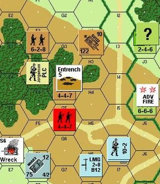

Recipe Book
3. Place
RB §3.1. Room Descriptions
The printing of a room description is a more delicate business than it might initially seem to be: Inform has to consider all the objects that the player might have brought into the room or dropped there, and all the objects on visible supporters, and decide how to group and list them.
All of this behavior is handled by the looking command, so we find the relevant rules in the carry out looking rulebook. To go through the elements step by step:
Looking begins by printing the name and description of the room we're in. We can introduce variations into room names and descriptions by changing their printed name and description properties, as in
now the printed name of the Church is "Lightning-Struck Ruin";
now the description of the Church is "The beams overhead have been burnt away and the pews are charred. Only the stone walls remain.";
If we need more drastic effects, we can turn off or change either of these features by altering the rules in the carry out looking rulebook. For instance, to remove the name of the location entirely from room descriptions, we would write
The room description heading rule is not listed in the carry out looking rules.
(A word of warning: there is one other context in which the story prints a room name — when restoring a save or undoing a move. To omit the room title here too, add
Rule for printing the name of a room: do nothing.)
Ant-Sensitive Sunglasses ★ demonstrates how to use activities to make more flexible room description text.
Next, the story determines what items are visible to the player and need to be described. These never include the player himself, or scenery, but other things in the environment will be made "marked for listing". This is also the stage at which Inform chooses the order in which items will be listed.
We are allowed to meddle by changing the priorities of objects, in case we want some things to be described to the player first or last in the room description; Priority Lab ★ goes into detail about how. We can also force things to be left out entirely: Low Light ★ handles the case of an object that can only be seen when an extra lamp is switched on, even though the room is not otherwise considered dark. Copper River ★★★ implements the idea of "interesting" and "dull" objects: the story determines which items are currently important to the puzzles or narrative and mentions those in the room description, while suppressing everything else.
Then Inform carries out the writing a paragraph about... activity with anything that provides one; anything it prints the name of, it tags "mentioned". Thus
Rule for writing a paragraph about Mr Wickham:
say "Mr Wickham looks speculatively at [list of women in the location]."
will count Wickham and everyone he looks at as all having been mentioned, and will not refer to them again through the rest of the room description. More complicated uses of writing a paragraph abound. A developed system for handling supporters that don't list contents appears in The Eye of the Idol ★★.
Inform then prints the initial appearances of objects that are marked for listing but not already mentioned; and then it performs the listing nondescript items activity, collating the remaining objects into a paragraph like
You can see a dog, a hen, ...
We can pre-empt items from appearing in this paragraph or change their listing by intervening with a Before listing nondescript items... rule, as in
Before listing nondescript items when the player needs the watch:
if the watch is marked for listing:
say "The watch catches your eye.";
now the watch is not marked for listing.
If we wanted the watch always to be listed this way, it would be better to give it an initial appearance, but for conditional cases, the listing nondescript items activity is a good place to intervene. For instance, Rip ★ uses this activity to incorporate changeable or portable items into the main description text for a room when (and only when) that is appropriate.
The listing nondescript items activity also allows us to replace the "You can see..." tag with something else more fitting, if for instance we are in a dimly lit room.
When the story compiles the list of nondescript items, it adds tags such as "(open)" or "(empty)" or "(on which is a fish tank)" to the names of containers and supporters. We can suppress or change the "(empty)" tag with the printing room description details of activity, as in
Rule for printing room description details: stop.
And we can suppress the "(open)" and "(on which is...)" sorts of tags with the "omit the contents in listing" phrase, as in
Rule for printing the name of the bottle while not inserting or removing:
if the bottle contains sand, say "bottle of sand";
otherwise say "empty bottle";
omit contents in listing.
Finally, the looking command lists visible non-scenery items that sit on scenery supporters, as in
On the table is a folded newspaper.
These paragraphs can be manipulated with the printing the locale description activity and the printing a locale paragraph about activity.
Another common thing we may want to do is change the description of a room depending on whether we've been there before (as in Slightly Wrong ★★) or on how often we've visited (as in Infiltration ★). Night Sky ★, meanwhile, changes the description of a room when we've examined another object, so that the player's awareness of his environment is affected by other things the character knows.
See also
Examples
147. Night Sky ★
Sometimes a nice effect is to change the way things are described depending on the information the player has gained in the course of play. We could for instance write this:
 "Night Sky"
"Night Sky"
The Planetarium is a room. "[if we have examined the sinister message]A dark room where it seems something is about to jump out at you![otherwise]A tranquil dark room with a ceilingful of stars.[end if]"
The sinister message is a thing in the Planetarium. "A message is taped to the wall." The description is "'BEWARE.'"
Test me with "look / x message / look".
On the other hand, beware that this would not work as desired:
"Night Sky"
The Planetarium is a room. "[if we have listened to the sinister message]A dark room where it seems something is about to jump out at you![otherwise]A tranquil dark room with a ceilingful of stars.[end if]"
The sinister message is a thing in the Planetarium. "A message plays very softly, so that you would have to listen to hear it." Instead of doing anything other than listening to the message: say "It's only a sound, after all.". Instead of listening to the sinister message: say "A voice whispers, 'BEWARE'."
Test me with "listen to message / look".
The reason is that our Instead rule has pre-empted normal listening, so Inform considers that we have never successfully heard the message. The moral here is that "if we have..." is useful for tracking events that otherwise proceeded completely normally (picking up ordinary objects, examining things); if we have used instead to make some change, we will have to use a different approach to record that the event did occur as scheduled.
152. Infiltration ★
Suppose we have a location that makes the player uncomfortable, and we want its description to change slightly each time he goes there, to reflect his increasing unease. We also want the door to that room to show whether he is going there for the first time, or whether this is a repeat visit.
We start with an ordinary room:
"Infiltration"
The Wasteland is a room. "In its more distant reaches, the Wasteland has a kind of austere beauty, but here beside the Secure Zone it is the worst of all possible worlds. Barrels of toxins are stacked the regulation hundred and fifty feet out; more traditional garbage has simply been flung over the wall, and this category includes one or two corpses roughly and inadequately disguised by black plastic bags. The wall itself has become a canvas for outcasts and exiles, and is covered with obscene paintings, lewd remarks about the inhabitants of the Secure Zone, and a few maudlin epitaphs."
Now the door, which will change from saying "leads inside..." to "leads back inside..." when this becomes appropriate:
The portal is a door. It is inside from the Wasteland and outside from the Secure Zone. "[if the player is in the Wasteland]To the west, a[otherwise]A[end if] portal in the cinder-block and barbed wire wall leads[if the player is in the Wasteland and the Zone is visited] back[end if] [if the player is in the Wasteland]inside[otherwise]outside[end if]."
Here we haven't used any conditions that we didn't know about in previous sections: the portal line only reflects whether the Zone has been visited never or visited once. But the Secure Zone itself makes use of the number of times visited:
The Secure Zone has the description "[if the player is in the Zone for the second time]Re-entering the Zone has not made you any more comfortable inside. [end if]Despite your carefully-chosen outfit and the walk you have been practicing, you are sure those inside can tell you don't belong. Not that very many people are visible here[if the player is in the Zone for more than the second time] -- the place seems more desolate than ever[end if]."
Instead of going west in the Wasteland, try going inside. Instead of going east in the Secure Zone, try going outside.
And finally, to be sure that the player does see our fancy changing descriptions:
Use full-length room descriptions.
Test me with "look / open portal / w / look / e / look / w / e / w".
Notice that the description of the Secure Zone changes from visit to visit, but that looking repeatedly during a single visit changes nothing.
334. Ant-Sensitive Sunglasses ★
Suppose we want to create an object -- or maybe even a series of objects -- that warp the player's perception of every room description and object around him.
We've already seen some ways to create variations in text. For instance, we could make a room description with if substitutions in it, like so:
The Kitchen is a room. "[if the player is wearing the sunglasses]Are ants coming out of the sink? No, probably no.[otherwise]A small kitchen tucked into a corner of the vacation house. There is storage space for five or six cups, a sink, a two-ring stove; nothing else to speak of.[end if]"
That works fine if we have one or two variations we want to add; it's not so good if we're going to have several items that work like the sunglasses, or if we want the sunglasses to override the description of every room in the house.
A slightly more flexible method is to use a substitution that calls out to a say phrase, like this:
The Kitchen is a room. "[kitchen-description]"
To say kitchen-description:
if the player is wearing the sunglasses:
say "Are ants coming out of the sink? No, probably no.";
otherwise:
say "A small kitchen tucked into a corner of the vacation house. There is storage space for five or six cups, a sink, a two-ring stove; nothing else to speak of."
But again this doesn't handle the case of overriding multiple rooms at once very well.
When we reach a point where we need a given piece of text to be very flexible depending on the world model, it's time to use an activity.
Activities offer several advantages. One, we can create an activity like this:
Printing the room-description of something is an activity.
and then write a rule that applies to multiple rooms at once, like:
Rule for printing the room-description of a room when the player wears the sunglasses:
say "The walls look like they're covered with ants. Just a coincidence, I'm sure."
Inform's usual rule-ranking also means that more-specific rules will override less-specific ones, so we could add
Rule for printing the room-description of the Kitchen when the player wears the sunglasses:
say "Are ants coming out of the sink? No, probably not."
and have that rule override the behavior of the activity just in the kitchen. Meanwhile, our base room descriptions remain straightforward and uncluttered by if-statements.
Several other examples will show how to hook activities into existing actions: Crusoe goes into detail about how how to make the descriptions of things more variable, and Aftershock demonstrates activities for describing the behavior of switchable devices.
Here, we preview all of those methods, just to get a sense of how they work and why they might be useful in controlling a game. Subsequent chapters go into more detail about the syntax of creating activities and the list of activities that are already defined by Inform.
"Ant-Sensitive Sunglasses"
Part 1 - Procedure
To add a new activity to an existing Inform rule, we need to do three things:
1) Define our new activity.
2) Give a basic rule that says what is supposed to happen when that activity occurs, as in "Rule for..."
3) Replace the existing rule in Inform's rulebooks with a new one that calls on our activity.
Here we do this with examining:
Section 1 - Item Description
Printing the description of something is an activity.
Now, by default, we want to print the description property; we just want the option to write some extra rules overriding that property. So we tell Inform that our most basic rule for printing the description of something is just to give that description text:
Rule for printing the description of something (called item):
if the description of the item is not "":
say "[description of item][paragraph break]";
otherwise:
say "You see nothing special about [the item].".
Next, we need the standard examining rule to look at our printing-the-description activity:
The activity-based examining rule is listed instead of the standard examining rule in the carry out examining rules.
This is the activity-based examining rule:
carry out the printing the description activity with the noun;
rule succeeds.
Now we do the same thing to room descriptions.
Section 2 - Room Description
Printing the room-description of something is an activity.
Rule for printing the room-description of a room (called item):
if the description of the item is not "":
say "[description of item][paragraph break]";
otherwise:
do nothing instead.
The activity-based room description body text rule is listed instead of the room description body text rule in the carry out looking rules.
Our replacement rule this time around is a little bit trickier just because the rule that we're replacing is a complicated one: describing a room already checks to see whether there's light to see by, whether the player has turned off room descriptions when he enters a room for the second time, and whether the player character is (say) inside a closed box he can't see out of.
But all of those details are re-copied from the standard rules, and the important thing is that, at the end, we again carry out our activity.
This is the activity-based room description body text rule:
if the visibility level count is 0:
if set to abbreviated room descriptions, continue the action;
if set to sometimes abbreviated room descriptions and
abbreviated form allowed is true and
darkness witnessed is true,
continue the action;
begin the printing the description of a dark room activity;
if handling the printing the description of a dark room activity,
say "It is pitch dark, and you can't see a thing.";
end the printing the description of a dark room activity;
otherwise if the visibility ceiling is the location:
if set to abbreviated room descriptions, continue the action;
if set to sometimes abbreviated room descriptions and abbreviated form
allowed is true and the location is visited, continue the action;
carry out the printing the room-description activity with the location.
Section 3 - Device Description
Showing action of something is an activity.
Rule for showing action of something (called item):
if the item is switched on, say "[The item] is switched on.";
otherwise say "[The item] is switched off."
The activity-based described devices rule is listed instead of the examine devices rule in the carry out examining rules.
This is the activity-based described devices rule:
if the noun is a device:
carry out the showing action activity with the noun;
now examine text printed is true.
Report switching on something:
say "You flip a switch. ";
carry out the showing action activity with the noun instead.
Part 2 - Scenario
The Kitchen is a room. "A small kitchen tucked into a corner of the vacation house. There is storage space for five or six cups, a sink, a two-ring stove; nothing else to speak of."
The microwave is a device in the Kitchen.
South of the Kitchen is the Living Area. The description of the Living area is "A whitewashed living/dining/reclining area in what used to be a shepherd's stone hut, but now costs vacationers 600 euros a week. It offers no mod cons, only a straight view of the Mediterranean and a wobbly writing table."
Rule for printing the room-description of a room when the player wears the sunglasses:
say "The walls look like they're covered with ants. Just a coincidence, I'm sure[antsy]."
Rule for printing the room-description of the Kitchen when the player wears the sunglasses:
say "Are ants coming out of the sink? No, probably not[antsy]."
Rule for printing the description of something (called the item) when the player wears the sunglasses:
say "[The item] [are] [one of]ant-colored[or]ant-legged[or]covered in ants[at random][antsy]."
Rule for showing action of the microwave:
say "The microwave hums meaningfully to itself."
Rule for showing action of the microwave when the player wears the sunglasses:
say "The microwave hums as though inhabited by a billion ants[antsy]."
The player carries sunglasses of freakiness and an apple. The apple is edible. The sunglasses are wearable.
ant-paranoia is a number that varies.
To say antsy:
increase ant-paranoia by 1;
Every turn:
if the ant-paranoia is greater than 3:
say "Augh! AUUUGH! GET THEM OFF--";
end the story saying "You have lost your mind."
Test me with "look / turn on microwave / turn off microwave / x apple / x sunglasses / s / wear sunglasses / look / x apple / n / turn on microwave".
355. Rip Van Winkle ★
There are times when, for greater elegance of prose, we'd like to mention an object in the main body text of a room. For instance:
Here is a lovely, secluded fold in the mountains, far from civilization: as though to prove it, Rip Van Winkle is sleeping under a tree.
As we've already seen, that's no problem if Rip is scenery. He'll stay there motionless.
But what if something in the game allows Rip to wake up? Or what if we want to use the same technique on a portable object that the player should be allowed to take? Clearly in that case it's not appropriate to make the mentioned thing be scenery, and at the same time, we need to keep Inform from adding a superfluous
You can see Rip Van Winkle here.
to the end of our description.
Here is how:
"Rip Van Winkle"
A person can be asleep.
The Catskills is a room. "Here is a lovely, secluded fold in the mountains, far from civilization[if Rip Van Winkle is asleep]: as though to prove it, Rip Van Winkle is sleeping under a tree[end if]."
A tree is scenery in the Catskills.
Rip Van Winkle is a man in the Catskills. Rip Van Winkle is asleep.
Before listing nondescript items of the Catskills:
if Rip Van Winkle is marked for listing:
now Rip Van Winkle is not marked for listing;
if Rip Van Winkle is not asleep,
say "Rip Van Winkle stands here, looking mightily confused."
Instead of waiting:
say "Rip Van Winkle wakes up with a snort.";
now Rip Van Winkle is not asleep.
Test me with "look / z / look".
358. Priority Lab ★
When it comes time to start manipulating the priorities of items, it is useful to be able to check the table for debugging purposes; the problem is that printing the names of the objects can itself affect the way the room description is generated, foiling our debugging efforts.
What follows is a rule to help with debugging safely, and a sample of how priorities work:
"Priority Lab"
Section 1 - Procedure
Before printing the locale description (this is the dump locale table rule):
say "Locale Priority list:";
repeat through Table of Locale Priorities:
let the flag be whether or not the notable-object entry is mentioned;
say "[line break] [notable-object entry]: [locale description priority entry]";
if the flag is false, now the notable-object entry is not mentioned;
say line break.
Now, let's look at some items put in a specific order. Things with low priority numbers list towards the beginning; things with high priority numbers list towards the end. (It helps to think of it as though we were making a numbered list of the paragraphs to appear in the description.) Anything numbered 0 doesn't appear at all, and the default priority of an object is 1.
A thing can be early-described, late-described, latest-described, never-described, sightline-described, or ordinarily-described. A thing is usually ordinarily-described.
After choosing notable locale objects (this is the apply early and late description rule):
repeat with item running through early-described things:
if there is a notable-object of item in the Table of Locale Priorities:
set the locale priority of the item to 1; [list before everything else -- this would work with any number lower than 5 and higher than 0]
repeat with item running through late-described things:
if there is a notable-object of item in the Table of Locale Priorities:
set the locale priority of the item to 10; [list after everything else -- this would work with any number larger than 5]
repeat with item running through never-described things:
set the locale priority of the item to 0; [don't list at all]
continue the activity.
An important cautionary note: priorities are only honored if the objects are going to get their own paragraphs (with "writing a paragraph about..." or because they have initial appearances). Priorities do not affect the order in which items appear in the final "You can see..." list, except that items with priority 0 or lower are omitted. (If we want to order the items in that list, we may want to resort to the Complex Listing extension by Emily Short.)
There are further refinements available to us: for instance, we could make some things that are only visible if the player is raised above ground level.
After choosing notable locale objects (this is the sightline-described things are visible from supporters rule):
if the player is not on a supporter:
repeat with item running through sightline-described things:
if there is a notable-object of item in the Table of Locale Priorities:
set the locale priority of the item to 0; [remove objects that can only be seen from higher objects.]
continue the activity.
It may also be useful to know about the "parameter-object", which refers to the thing whose contents we are currently describing: the standard rules consider how to describe the contents of the location and then also check the contents of any supporter or container the player may be inside, so in the first case "parameter-object" would be the location, and then in the second the supporter in question.
In practice this is rarely useful, but should we need to change priorities in the case of both player and object being inside a particular container, we might make use of it, for instance:
A thing can be tasteful or icky. A thing is usually tasteful.
After choosing notable locale objects (this is the icky things next to players rule):
if the player is on the parameter-object:
repeat with item running through icky things :
if there is a notable-object of item in the Table of Locale Priorities:
set the locale priority of the item to 10; [remove objects that can only be seen from higher objects.]
continue the activity.
The other thing to note is that by default that final collection of generic objects ("You can also see...") appears at the end, regardless of the priority of everything else. If we really wanted to, though, we could force something to appear even after that paragraph, by adding a new listing rule to the locale description rules:
After choosing notable locale objects (this is the latest-described items priority rule):
repeat with item running through latest-described things:
if the item is a notable-object listed in the Table of Locale Priorities:
now the item is mentioned;
now the item is marked for late listing.
The late listing rule is listed after the you-can-also-see rule in the for printing the locale description rules.
A thing can be marked for late listing. A thing is usually not marked for late listing.
This is the late listing rule:
if something is marked for late listing:
say "Oh! And also [a list of things which are marked for late listing].";
now everything is not marked for late listing;
continue the activity.
Section 2 - Scenario
The Priority Lab is a room. The early bird, the worm, the leaf, the unseen object, the pebble, the twig, and the late edition are things in the Priority Lab.
The early bird is early-described. The late edition is late-described. The unseen object is never-described.
The worm is icky.
The high window is in Priority Lab. It is sightline-described and fixed in place. The initial appearance of the high window is "There's a tiny high window up near the ceiling that you can't see unless you're on top of something."
In order for the priorities we just set to be interesting, let's give out some initial appearances and writing a paragraph rules:
The initial appearance of the worm is "A worm inches along the ground."
The initial appearance of the late edition is "Finally, the late edition lies at your feet."
Rule for writing a paragraph about the early bird when the early bird is in a room: say "The early bird always appears first, and here it is."
Rule for writing a paragraph about the leaf: say "Look, there's [a leaf][unless the leaf is in the location] on [the holder of the leaf][end if]!"
Rule for writing a paragraph about an icky thing (called icky item) which is on something which supports the player: say "Ew, [an icky item] is right next to you."
This procedure also means (as you can test by experiment) that after the late edition has been picked up and dropped again, it lists in no special order in the "you can see..." paragraph (since initial appearances only print when the object has not yet been moved).
The afterthought is a thing in the Priority Lab. It is latest-described.
The bar stool is an enterable supporter in Priority Lab.
Test me with "get leaf / drop leaf / look / x unseen object / get pebble / look / get twig / look / get afterthought / look / drop twig / look / get late edition / look / drop late edition / sit on bar stool / look / get all / put all on stool / look".
359. Low Light ★
Suppose we want a different treatment of lighting than the usual: the room isn't totally dark, but there's something we can't see unless we turn on a bright light.
"Low Light"
First we make our environment and its light:
The Workroom is a room. The desk is in the Workroom. The brilliant lamp is a device on the desk.
To decide whether the light level is high:
if the brilliant lamp is switched off, no;
if the player cannot see the brilliant lamp, no;
yes.
To decide whether the light level is low:
if the light level is high, no;
yes.
Now we make a shadow so that the player can only refer to it if the shadow is in inventory or the light is on:
The shadow is a privately-named thing on the desk.
Understand "barely-visible" or "barely visible" or "shadow" as the shadow when the light level is high. Understand "invisible" or "shadow" as the shadow when the player encloses the shadow.
And finally a couple of extra touches to make it clear why we're able to interact with the shadow when it's in inventory, even if the light is low:
Before printing the name of the shadow:
if the light level is high:
say "barely-visible ";
otherwise if the player encloses the shadow:
say "invisible (but tangible) "
After dropping the shadow when the light level is low:
say "You let it go and it fades into the ambient gloom."
To handle the appearance of the object, we want to set its locale priority to 0: that will prevent it being named in room descriptions.
After choosing notable locale objects:
unless the light level is high:
set locale priority of the shadow to 0.
Test me with "look / get shadow / turn on lamp / look / get shadow / i / turn off lamp / i / drop shadow / look / get shadow / turn on lamp / look".
4. Slightly Wrong ★★
A fairly common effect in interactive fiction is a room which is described differently on the first visit than on subsequent visits. We can produce this effect as follows:
"Slightly Wrong"
Awning is a room. "A tan awning is stretched on tent poles over the dig-site, providing a little shade to the workers here; you are at the bottom of a square twenty feet on a side, marked out with pegs and lines of string. Uncovered in the south face of this square is an awkward opening into the earth."
Slightly Wrong Chamber is south of the Awning. "[if unvisited]When you first step into the room, you are bothered by the sense that something is not quite right: perhaps the lighting, perhaps the angle of the walls. [end if]A mural on the far wall depicts a woman with a staff, tipped with a pine-cone. She appears to be watching you."
Test me with "look / s / look".
Note the "[if unvisited]..." in the description of the Slightly Wrong Chamber. A room is considered to be "unvisited" until after the player has seen its description for the first time.
The bracketed text creates a special rule for printing; we will learn more about these in the sections on text with variations and text with substitutions.
Some further fine print: we might write our condition as "if unvisited", "if the location is unvisited", or "if the Chamber is unvisited" -- all of these constructions would be acceptable, but in the absence of more specifics, the condition is understood to apply to the object whose description it is.
357. The Eye of the Idol ★★
"The Eye of the Idol"
Section 1 - Reusable Material
We start by defining relations that let us know where items "belong", with the understanding that if something is where it belongs, it will be described in the main room description and therefore should not be separately listed. Thus:
Positioning relates various things to various things. The verb to be placed in means the positioning relation. The verb to be placed on implies the positioning relation.
Room-positioning relates various things to various rooms. The verb to be room-placed in means the room-positioning relation.
We can't make relations relate various objects to various objects, and rooms are not things, so two separate cases are necessary. An alternative approach would be to say "A thing has an object called the initial placement", which would allow a thing to have an initial placement that was a room, a supporter, or a container; an advantage of using relations, though, is that that way we can if we like specify multiple placements for the same object, so that, e.g., a sparkling diamond can be described in the main description paragraph as "half-buried in dust" in the beginning of the game, and then at the end as "in the eye of the idol" at the end.
Now we define, based on these relations, an "in-place" adjective, which will identify whether something is in a location which will specially describe it:
Definition: a thing (called prop) is in-place:
if the prop is in the location and the prop is room-placed in the location, yes;
if the holder of the prop is a thing and the prop is placed in the holder of the prop, yes;
no.
Definition: a thing is out-of-place if it is not in-place.
With that done, removing these items automatically from the room description is actually pretty easy:
Before listing nondescript items:
now every marked for listing in-place thing is not marked for listing.
One tricky case remains: when something is placed on a supporter that is scenery, it can be mentioned even if we have marked that object "not marked for listing". What matters here is not whether the object itself is marked for listing but whether the supporter has been "mentioned". (A fuller description of how room descriptions are assembled is available in the Looking section of the Commands chapter in the Recipe Book.) So let's also add a feature whereby we can easily suppress the descriptions of these supporters when appropriate:
A supporter can be quiet.
A quiet supporter is one that is never mentioned itself and which only mentions its contents if they are out of place. This allows for maximum flexibility in incorporating it into the body of room descriptions.
Rule for writing a paragraph about a quiet supporter (called chosen table):
if an out-of-place thing is on the chosen table:
if an in-place thing is on the chosen table,
say "On [the chosen table], in addition to [the list of in-place things on the chosen table], [is-are a list of out-of-place things which are on the chosen table].";
otherwise say "On [a chosen table] [is-are a list of out-of-place things which are on the chosen table].";
now the chosen table is mentioned.
Notice that we can still override this with writing a paragraph rules about specific supporters in our game, if we decide that we want something a little different in some cases.
Now, an example to test this out:
Section 2 - A Sample Scenario
The Sand-Floored Chamber is a room. "The constant wind has filled this chamber with a layer of fine red sand, as soft as powder snow[if the diamond is in the Sand-floored Chamber]. Something sparkling is half-buried in the corner[end if]. A doorway lies open to the north."
The sparkling diamond is in the Sand-floored Chamber. The sparkling diamond is room-placed in the Sand-floored Chamber. The description is "It is a vast diamond; the front is faceted, the back smoothed to fit in some sort of socket."
The Hexagonal Temple is north of the Sand-Floored Chamber. "The temple walls are great ashlar blocks rising to a hundred feet overhead, perhaps more; the roof is a scarlet awning only, through which the sun filters down in blood hues. Overseeing all is a sculpture in stone and ivory[if the sparkling diamond is in the idol's eye], in whose single eye a vast diamond gleams[end if][mat-and-incense text].".
To say mat-and-incense text:
if the mat is in the Temple and the incense stick is on the pedestal:
say ". A prayer mat at the idol's feet, and an incense stick still burning on the pedestal, indicate that someone was only recently consigning her grievances to the care of the deity";
otherwise if the mat is in the Temple:
say ". At the idol's feet, some worshipper has left a prayer mat";
otherwise if the incense stick is on the pedestal:
say ". At the idol's side is a pedestal, on which incense still smolders".
We could have done all this with text conditions in the main room description, but it becomes difficult to read when there are too many conditions operating in the same text property, so we break it out into a clearer set of conditions.
The idol is scenery in the Hexagonal Temple. Understand "sculpture" or "stone" or "ivory" as the idol. The description is "The idol is perhaps three times the height of an ordinary man."
The idol's eye is part of the idol. It is a container. The description is "[if the diamond is in the idol's eye]It gleams with purpose and righteous wrath[otherwise]A round socket in the center of the idol's forehead from which something seems to be missing[end if]."
The pedestal is a quiet supporter in the Hexagonal Temple. On the pedestal is an incense stick. The incense stick is placed on the pedestal.
A mat is in the Hexagonal Temple. It is room-placed in the Hexagonal Temple. The description is "Woven of assorted grasses."
Test me with "get diamond / look / n / get mat / look / drop diamond / look / get diamond / put diamond in eye / look / get incense / look / drop mat / look / get mat / put mat on pedestal / look / put incense on pedestal / look".
362. Copper River ★★★
In a very dense environment, we might want to offer the player room descriptions in which only the currently-interesting items are mentioned, while other objects are suppressed even if they are present. In effect, this takes the idea of scenery and makes it more flexible: different things might become background objects or foreground objects at different times during play.
There are a wide range of possible reasons to do this -- to shift the narrative emphasis, to change the mood of the game by highlighting different parts of the environment, to show the game from the perspective of different viewpoint characters -- but in the following example, our goal is to show the player only the objects that are currently useful for puzzles.
To do this, we need some notion of what puzzles are currently available and unsolved, so we make an "unsolved" adjective; we also need to know which things solve the puzzle, so we create a "resolving" relation, to indicate which objects resolve which problems.
Given that information, we can create rules about which objects in the game world are currently interesting, which are currently dull, and describe accordingly:
"Copper River"
Use scoring.
Section 1 - Procedure
Resolving relates various things to various things. The verb to resolve means the resolving relation.
Definition: a thing is interesting if it is not dull.
Definition: a person is dull:
no.
Definition: a thing is dull:
if it is unsolved, no;
if it resolves an unsolved thing, no;
yes.
Definition: a supporter is dull:
if it is unsolved, no;
if it resolves an unsolved thing, no;
if it supports an interesting thing, no;
yes.
Definition: a container is dull:
if it is unsolved, no;
if it resolves an unsolved thing, no;
if it contains an interesting thing, no;
yes.
After choosing notable locale objects:
repeat with item running through unsolved things:
set the locale priority of the item to 1.
For printing a locale paragraph about a dull thing (called item):
now the item is mentioned.
Before printing a locale paragraph about a supporter (called item):
now every dull thing on the item is mentioned.
Before printing a locale paragraph about a container (called item):
now every dull thing on the item is mentioned.
Instead of searching a supporter:
if the noun supports something interesting:
say "[A list of interesting things on the noun] [are] on [the noun]";
if the noun supports something dull:
say " (alongside [a list of dull things on the noun])";
say ".";
otherwise if the noun supports something dull:
say "There's nothing very useful here, only [a list of dull things on the noun].";
otherwise:
say "[The noun] [are] completely bare."
Instead of searching a container:
if the noun contains something interesting:
say "[A list of interesting things in the noun] [are] in [the noun]";
if the noun contains something dull:
say " (alongside [a list of dull things in the noun])";
say ".";
otherwise if the noun contains something dull:
say "There's nothing very useful here, only [a list of dull things in the noun].";
otherwise:
say "[The noun] [are] completely empty."
Before listing contents when not taking inventory: group dull things together.
Rule for grouping together dull things: say "assorted dull items".
Section 2 - Scenario World and Objects
The Kitchen is a room. "Your Aunt Fiona's kitchen looks as though it has been at the eye of a glitter storm. Fine, sparkling grit dusts every surface. The appliances are slightly askew, too, as though they hadn't quite settled after a vigorous earthquake."
The shelf is a scenery supporter in the Kitchen. On the shelf is a can of beans, a can of potato leek soup, and a tin of deflating powder.
The cabinet is a scenery container in the Kitchen. In the cabinet is a book of matches, a bottle of descaling solution, a fish hook, and a rusty knife. It is openable and closed.
The counter is a scenery supporter in the Kitchen. On the counter is an espresso machine, a blender, and a mortar. The blender and the mortar are containers. In the mortar is a pestle. Understand "countertop" as the counter.
The stove is a scenery supporter in the Kitchen. The oven is part of the stove. The oven is a closed openable container.
The refrigerator is a fixed in place container in the Kitchen.
Understand "fridge" as the refrigerator.
The description is "The refrigerator is a dull blue-green, and has a puffy, marshmallow texture on the outside, which means that it's no good for sticking magnets to. Aunt Fiona has never been willing to explain where she got it." The refrigerator is openable and closed.
In the refrigerator are a bottle of ice wine, a bag of carrot sticks, and an egg.
Aunt Fiona is a woman in the Kitchen. Aunt Fiona can be inflated or deflated. Aunt Fiona is inflated. "[if Aunt Fiona is inflated]Aunt Fiona stands nearby. Or perhaps 'stands' is the wrong word: she has been sort of puffed up in her own skin like a balloon, and is now propped in a corner of the room with her head lolling back[otherwise]Aunt Fiona stands -- on her own two slender legs -- at the center of the room[end if]."
Every turn when Fiona is unsolved and Fiona can see the player:
if a random chance of 1 in 3 succeeds:
say "[one of]Aunt Fiona's eyes follow you, wide and desperate, but it doesn't look like she's able to do anything[or]Aunt Fiona is still looking reproachful[or]A faint gurgling comes from Aunt Fiona[or]Aunt Fiona makes a funny croak noise[or]Aunt Fiona is still having trouble speaking. Perhaps her throat is as swollen as the rest of her[or]Aunt Fiona twitches[stopping]."
There is a thing called a salmon. Understand "fish" as the salmon. The salmon can be scaly or prepared. The salmon is scaly. The description is "[if scaly]It looks delicious, but is still covered with scales[otherwise]The salmon has been scaled and is ready to eat[end if]."
Before printing the name of the salmon when the salmon is scaly:
say "very scaly ".
Section 3 - Scenario Puzzles
Definition: Aunt Fiona is unsolved if she is inflated.
Definition: the salmon is unsolved:
if the salmon is off-stage, no;
if the salmon is scaly, yes;
no.
The deflating powder resolves Aunt Fiona.
Instead of putting the deflating powder on Aunt Fiona:
try throwing the deflating powder at Aunt Fiona.
Instead of giving the deflating powder to Aunt Fiona:
try throwing the deflating powder at Aunt Fiona.
Instead of throwing the deflating powder at Aunt Fiona:
if Aunt Fiona is inflated:
say "You toss some of the powder in Aunt Fiona's direction, and with a sudden gaseous HUFF! she returns to her usual shape and size. [paragraph break]'Well!' she says, brushing herself off. 'That was bracing!' [paragraph break]You give her an embarrassed smile, to apologize for not curing her faster.";
now Aunt Fiona is deflated;
increase the score by 2;
otherwise:
say "[one of]You throw another hefty dose of the powder at your aunt. [paragraph break]'Thank you, child,' she says, sneezing. 'But I think you've done enough now.'[or]You throw another hefty dose of the powder at your aunt. [paragraph break]'You're too kind,' she wheezes, through a cloud of glittering dust.[or]You've probably done enough with the powder.[stopping]".
Every turn when Aunt Fiona is deflated and the salmon is off-stage:
move the salmon to the counter;
say "'At least they didn't get this,' she says, producing from somewhere on her person a fresh-caught salmon. An odd pattern around its eye sockets makes it looks comically as though it wears spectacles. 'It's the Salmon of Knowledge,' she explains casually. 'We just need to scale and cook it.'"
The bottle of descaling solution resolves the salmon.
Does the player mean putting the descaling solution on the fish hook: it is unlikely.
Does the player mean putting the descaling solution on the salmon: it is very likely.
Instead of putting the bottle of descaling solution on the salmon:
if the salmon is scaly:
now the salmon is prepared;
say "With just a single squirt of the descaling solution (which confusingly has a picture of bathroom tiles on the label), you remove the scales from the salmon, leaving its pink flesh ready for preparation.";
increase the score by 2;
otherwise:
say "'Don't do that,' Aunt Fiona warns you. 'Excessive applications could damage the flesh.'"
Test me with "look / get powder / drop powder / look / look in cabinet / get powder / put powder on fiona / look / open cabinet / look in cabinet / get solution / open fridge / put solution in fridge / look / get solution / put solution on salmon / look".
RB §3.2. Map
A work of IF contains many spectacles and activities, and these must not all present themselves at once, or the player will be overwhelmed. One way to spread them out is in time, by having them available only as a plot develops, but another is to spread them out literally in space. The player has to walk between the Library and the Swimming Pool, and thus bookish and athletic tasks are not both presenting themselves at once. There have been valiant "one-room" IFs, and it forms a respectable sub-genre of the art, but most works of any size need a map.
Inform, following IF conventions, divides the world up into locations called "rooms", connected together by so-called "map connections" along compass bearings. Thus:
The Library is east of the Swimming Pool.
The example Port Royal 1 ★ develops a medium-sized map from such sentences. This develops in Port Royal 2 ★ to include connections which bend around, allowing the rooms not to lie on an imaginary square grid.
Because it is useful to group rooms together under names describing whole areas, Inform also allows rooms to be placed in "regions". Thus:
The Campus Area is a region. The Library and the Swimming Pool are in the Campus Area.
Port Royal 3 ★ demonstrates this further. A&E ★★ shows how regions can be used to write simple rules which regulate access to and from whole areas of the map.
Many old-school IF puzzles involve journeys through the map which are confused, randomised or otherwise frustrated: see Bee Chambers ★ for a typical maze, Zork II ★ for a randomised connection, Prisoner's Dilemma ★★ for a change in the map occurring during play. A completely random map takes us away from traditional IF and more towards a different sort of old-school game, the computerised role-playing game with its endless quests through dungeons with randomly generated treasures and monsters. This style of map - building itself one step at a time, as the player explores - can sometimes be useful to provide an illusion of infinite expanse: see All Roads Lead To Mars ★.
While the standard compass directions are conventional in IF, there are times when we may want to replace them without other forms of directional relationship. Indirection ★ renames the compass directions to correspond to primary colors, as in Mayan thinking. The World of Charles S. Roberts ★★ substitutes new ones, instead, introducing a hex-grid map in place of the usual one.
See also
Examples
5. Port Royal 1 ★
"1691"
Fort James is a room. "The enclosure of Fort James is a large, roughly hexagonal court walled with heavy stone. The walls face the entrance to Port Royal Harbour, and the battery of guns is prepared to destroy any enemy ship arriving."
Unless we arrange otherwise, this will be the first room in the game because it is the first we have defined.
For subsequent rooms, we do not have to say explicitly that they are rooms, as long as they are connected to a room on the map. For instance, this will automatically make Thames Street End a room:
Thames Street End is south of Fort James. "The ill-named Thames Street runs from here -- at the point of the peninsula -- all the way east among houses and shops, through the Fish Market, edging by the round front of Fort Carlisle, to the point where the town stops and there is only sandy spit beyond. Lime Street, wider and healthier but not as rich, runs directly south, and to the north the road opens up into the courtyard of Fort James."
Water Lane is east of Thames Street End. "Here Thames Street -- never very straight -- goes steeply southeast for a portion before continuing more directly to the east.
Water Lane runs south toward Queen Street, and facing onto it is the New Prison -- which, in the way of these things, is neither. It did serve in that capacity for a time, and in a measure of the villainy which has been usual in Port Royal from its earliest days, it is nearly the largest building in the town."
If we have some concern that the room name will be confused with an existing name, we can be more explicit about it using "called":
East of Water Lane is a room called Thames Street at the Wherry Bridge. Thames Street at the Wherry Bridge has the description "To the southwest is the fishmarket; directly across the street is the entrance to a private alley through a brick archway."
The Private Alley is south of Thames Street at the Wherry Bridge. "You're just outside the tavern the Feathers. To the north, under a pretty little archway, is the active mayhem of Thames Street, but the alley narrows down to a dead end a little distance to the south."
And now we get "inside", which generates a space treated as its own area on the map.
The Feathers is inside from the Private Alley. "Newly built with brick, replacing the older Feathers tavern that used to stand here. It sells wines in quantity, as well as serving them directly, and the goods are always of the best quality. There's a room upstairs for those wanting to stay the night." The Feathers Bedroom is above the Feathers.
And if we like we can declare a number of rooms for which we will come back and write the descriptions later. There is no obligation for the description to occur at the first definition of the room.
Lime Street is south of Thames Street End.
For efficiency, we can also write multiple sets of connections at once:
Queen Street East is east of Queen Street Middle and south of Private Alley.
Clicking Go will translate this description into a sketchy but working simulation of Port Royal, in which we can type movement commands like EAST or SOUTH to explore the streets. Looking at the World tab of the Index, we can also see a schematic map of the simulation as it currently stands. Like the rest of the Index, this is provided entirely for the author's benefit, and is not visible to the player. (Though if we do decide that we want players to have access to a printed map while they play, Inform can help: we will return to the layout of Port Royal in the chapter on Publishing.)
The following Test command allows us to type TEST ME and explore the map we just devised:
Test me with "s / e / e / s / in".
9. Port Royal 2 ★
"1691"
Thames Street End is a room.
If we check out a map of historic Port Royal, we find that Thames Street End bends around the northwest tip of the peninsula and becomes the (very) roughly north/south Fisher's Row. We can't put Fisher's Row south of Thames Street End, though, because Lime Street is already going that way. So instead, let's have a map connection that bends around from west to north:
West of Thames Street End is north of Fisher's Row.
Now continuing west along Thames Street, or north along Fisher's Row, will bring us around the corner in question. Asymmetric map connections should be used carefully. They're good for representing the layout of the real world, which tends not to be laid out on a convenient square matrix, but if exits are not described clearly they can be disorienting for the player. So let's be sure to make things clear:
The description of Fisher's Row is "A waterfront street that runs south towards Chocolata Hole, where the small craft are harboured. It also continues north around the tip of the peninsula from here, turning into the east-west Thames Street."
Meanwhile, suppose Fort James is in a prominent position, raised a bit from its surroundings; maybe the player should be able to go down from there, as well as south, to get to Thames Street End.
Thames Street End is down from Fort James. Thames Street End is south from Fort James.
But we don't want the upward direction to work:
Up from Thames Street End is nowhere.
Test me with "n / d / u / w / e / n / s".
10. Port Royal 3 ★
"1691"
We should go ahead and do all our room definitions first...
Fort James is a room. "The enclosure of Fort James is a large, roughly hexagonal court walled with heavy stone. The walls face the entrance to Port Royal Harbour, and the battery of guns is prepared to destroy any enemy ship arriving."
Thames Street End is south of Fort James. "The ill-named Thames Street runs from here -- at the point of the peninsula -- all the way east among houses and shops, through the Fish Market, edging by the round front of Fort Carlisle, to the point where the town stops and there is only sandy spit beyond. Most of that stretch is full of people at all hours. Imported goods are moved off of ships and taken to distributors; exported goods are brought to be loaded; and there is one public house and brothel for every ten inhabitants.
Lime Street, wider and healthier but not as rich, runs directly south, and to the north the road opens up into the courtyard of Fort James."
Lime Street is south of Thames Street End. West of Thames Street End is north of Fisher's Row. The description of Fisher's Row is "A waterfront street that runs south towards Chocolata Hole, where the small craft are harboured. It also continues north around the tip of the peninsula from here, turning into the east-west Thames Street."
Thames Street End is down from Fort James. Up from Thames Street End is nowhere.
Water Lane is east of Thames Street End. "Here Thames Street -- never very straight -- goes steeply southeast for a portion before continuing more directly to the east.
Water Lane runs south toward Queen Street, and facing onto it is the New Prison -- which, in the way of these things, is neither. It did serve in that capacity for a time, and in a measure of the villainy which has been usual in Port Royal from its earliest days, it is nearly the largest building in the town."
East of Water Lane is a room called Thames Street at the Wherry Bridge. Thames Street at the Wherry Bridge has the description "To the southwest is the fishmarket; directly across the street is the entrance to a private alley through a brick archway."
The Fishmarket is southwest of Thames Street at the Wherry Bridge.
The Private Alley is south of Thames Street at the Wherry Bridge. "You're just outside the tavern the Feathers. To the north, under a pretty little archway, is the active mayhem of Thames Street, but the alley narrows down to a dead end a little distance to the south."
The Feathers is inside from the Private Alley. "Newly built with brick, replacing the older Feathers tavern that used to stand here. It sells wines in quantity, as well as serving them directly, and the goods are always of the best quality. There's a room upstairs for those wanting to stay the night." The Feathers Bedroom is above the Feathers.
Thames Street by the King's House is east of Thames Street at the Wherry Bridge. "The King's House is reserved for the use of the Governor, but he does not live in it, and it is frequently being rented out to some merchant so that the government will at least derive some value from it. It is nearly the least interesting establishment on Thames Street, and the crowd -- which, to the west, is extremely dense -- here thins out a bit."
Thames Street before Fort Carlisle is east of Thames Street by the King's House. "Here Thames Street, formerly a respectable width, narrows to a footpath in order to edge around the front of Fort Carlisle, underneath the mouths of the cannon.
There are no buildings on the harbour side of Thames Street at this point, which means that you have an unusually good view of the ships at dock, water beyond, and the Blue Mountains rising on the other side of the harbour."
South of Thames Street before Fort Carlisle is a room called Fort Carlisle. The description of Fort Carlisle is "Handsomely arrayed with cannons which you could fire at any moment -- though of course there are ships at dock which might be in the way."
Queen Street End is south of Lime Street.
Queen Street Middle is east of Queen Street End.
Queen Street East is east of Queen Street Middle and south of Private Alley.
Queen Street at the Prison is east of Queen Street East.
Now, if we like, we can create regions to distinguish the coast from the portions of town that aren't on the water:
Inland is a region. Queen Street End, Queen Street Middle, Queen Street East, Private Alley, Lime Street, and Queen Street at the Prison are in Inland.
Waterfront is a region. Thames Street before Fort Carlisle, Thames Street by the King's House, Thames Street at the Wherry Bridge, Water Lane, Fishmarket, Fisher's Row, and Thames Street End are in Waterfront.
There's no rule that regions must be contiguous, so we could if we like make a region consisting just of the two forts:
Military Holdings is a region. Fort Carlisle and Fort James are in Military Holdings.
And we might make the Feathers Tavern part of the Inland area, but within its own subcategory:
Tavern is a region. It is in Inland. Feathers and Feathers Bedroom are in Tavern.
Now the index map will be colored to reflect our regions, and later in the game development we would be able to make rules that affect just one region at a time.
78. All Roads Lead to Mars ★
Suppose we want to allow the player to wander freely in any direction, but ourselves maintain control over the order in which he encounters the rooms. This sort of effect emphasizes the order of the story-telling over any kind of rigorous simulation of space; on multiple play-throughs, the player might not find all the same rooms in the same locations.
"All Roads Lead to Mars"
Before going a direction (called way) when a room (called next location) is not visited:
let further place be the room the way from the location;
if further place is a room, continue the action;
change the way exit of the location to the next location;
let reverse be the opposite of the way;
change the reverse exit of the next location to the location.
The Open Plain is a room. "A wide-open grassy expanse, from which you could really go any way at all."
The Hilly Place is a room. "The grassland gives way to a somewhat more hilly area, though there is still very little to guide you any particular way."
The Stream is a room. "This is the third place you've been today, and so the stream is welcome. How refreshing!"
Test me with "n / s / e / e".
If we wanted still to be able to find routes between places, we could define a relationship of connection between rooms, which we would add to as we went along.
125. Bee Chambers ★
Mazes are a traditional element of interactive fiction, often consisting of apparently identical rooms with exits that do not work reciprocally and which cause confusion.
The methods of mapping mazes are now fairly well understood and mazes themselves tend to be regarded as tiresome rather than enjoyable by a large portion of the playing audience. However, if we did want to ignore the common wisdom and create a maze, randomly generated at the start of play, here would be one way to go about it:
"Maze of Gloom"
A Bee Chamber is a kind of room. The printed name of a Bee Chamber is usually "Hexagonal Room". The description of a Bee Chamber is usually "Waxy, translucent walls surround you on six sides; the floor and ceiling are made of the same material, gently uneven. There are exits in every direction, cut into the faces or the corners."
Bee1, Bee2, Bee3, Bee4, Bee5, Bee6, Bee7, Bee8, Bee9, and Bee10 are Bee Chambers.
When play begins:
now right hand status line is "[number of visited rooms]/[number of rooms]";
repeat with place running through Bee Chambers:
now a random Bee Chamber is mapped north of place;
now a random Bee Chamber is mapped northwest of place;
now a random Bee Chamber is mapped west of place;
now a random Bee Chamber is mapped southwest of place;
now a random Bee Chamber is mapped south of place;
now a random Bee Chamber is mapped southeast of place;
now a random Bee Chamber is mapped east of place;
now a random Bee Chamber is mapped northeast of place;
now a random Bee Chamber is mapped above place;
now a random Bee Chamber is mapped below place;
now a random Bee Chamber is mapped inside place;
now a random Bee Chamber is mapped outside place.
Test me with "in / out / up / down / n / ne / nw / e / w / sw / se / s".
134. Zork II ★
All we need to do is select the player's destination for him at random:
"Zork II"
The Carousel Room is a room.
Instead of going from the Carousel Room:
move the player to a random adjacent room.
To avoid infringing the original game too much, let's try a somewhat different setting:
The Games of Chance is north of the Carousel Room. The Haunted Funhouse is northwest of the Carousel Room. The Ferris Wheel is east of the Carousel Room. The Topsy-Turvy is northeast of the Carousel Room. The Reproduction Henge is south of the Carousel Room. The Women's Toilet is southwest of the Carousel Room. The Men's Toilet is southeast of the Carousel Room. The Cotton Candy Shop is west of the Carousel Room.
Test me with "s".
And the following means that the test runs consistently even though the numbers are theoretically random. To make them truly random, remove this line.
When play begins, seed the random-number generator with 1234.
Or if we want to add the refinement that the Carousel Room can be switched off:
"Zork II"
The Carousel Room is a room. The spinning machine is a switched on device in the Carousel Room.
And then
Instead of going from the Carousel Room when the spinning machine is switched on:
move the player to a random adjacent room.
The Games of Chance is north of the Carousel Room. The Haunted Funhouse is northwest of the Carousel Room. The Ferris Wheel is east of the Carousel Room. The Topsy-Turvy is northeast of the Carousel Room. The Reproduction Henge is south of the Carousel Room. The Women's Toilet is southwest of the Carousel Room. The Men's Toilet is southeast of the Carousel Room. The Cotton Candy Shop is west of the Carousel Room.
Test me with "turn off machine / s / n / turn on machine / s".
When play begins, seed the random-number generator with 1234.
287. Indirection ★
In Mayan culture, colours seem to have been used as names for the primary directions: for instance, "red" implies east as the colour of sunrise. So the following might be a stylish touch for a game in which the player has to get inside the Mayan world-view:
"Indirection"
Understand "white" and "sac" as north. Understand "red" and "chac" as east. Understand "yellow" and "kan" as south. Understand "black" and "chikin" as west.
We could also use a colour as a verb:
Understand "turquoise" and "yax" as looking.
And now a few extra rooms to try it out in:
The Square Chamber is a room. "A sunken, gloomy stone chamber, ten yards across. A shaft of sunlight cuts in from the steps above, giving the chamber a diffuse light, but in the shadows low lintelled doorways to east and south lead into the deeper darkness of the Temple."
The Wormcast is east of the Square Chamber. The Corridor is south of the Square Chamber.
Test me with "kan / white / chac / black".
40. Prisoner's Dilemma ★★
We can change the directions in the map in mid-game, though in practice this is rarely necessary. But suppose we do not want a door or any sign of a door to exist before the player takes some action, in this case pressing a button:
"Prisoner's Dilemma"
Challenger's Waiting Room is a room. "The challenge is this: to wait as long as you can endure to do so in a room with no features and no clock. If you wait longer than all the other contestants, you win."
The button is fixed in place in the Challenger's Waiting Room. "The only item in view is a black recessed button."
Amid the Cheering Throng is a room.
Instead of pushing the button for the first time:
change the east exit of the Challenger's Waiting Room to Amid the Cheering Throng;
change the west exit of the Cheering Throng to the Challenger's Waiting Room;
say "With a groan of gears, the east wall swings open! If you've lost now, well, you've lost..."
Test me with "e / push button / e / w".
Our instructions about pushing the button will be further explained in the chapter on Actions, but the thing to note here is that we can "change (whatever) exit" in order to set or re-set map directions. Notice that we have to set both directions explicitly: changing the east exit of the Waiting Room does not automatically also change the west exit of Amid the Cheering Throng.
This allows greater flexibility in our games but does require an extra line or so of work.
41. The World of Charles S. Roberts ★★
Wargaming is an ancient pursuit, but its modern form began as a professional training exercise in 19th-century Prussian staff colleges; since at least as early as H. G. Wells's "Little Wars" (1913) it has been a hobby of "boys from twelve years of age to one hundred and fifty and for that more intelligent sort of girl who likes boys' games and books." The free-form tabletop game used miniature figures and tape-measured movements, and remains the dominant form today. But in the mid-20th century, map grids on printed sheets gave the hobby a sudden new lease of life. They were easier to set up, more interesting to look at, cheaper to sell by mail-order. 1970s sales figures for "Strategy and Tactics", the leading US subscription-based wargame distributor, were very similar to those of Infocom's IF games in the 1980s. And like classical IF, the grid-based wargame parceled up a continuous world into locations.
Grids were initially square, as on a chessboard, but square cells have several disadvantages. Four directions of movement (N, E, S, W) is too few, yet allowing movement in the diagonal directions means allowing tanks to travel about 1.4 times faster northeast than they do north. Square grids also only conform cleanly to man-made landscape features such as buildings in one orientation, and they never fit hills well. (A compromise measure to fix this, cutting the squares into octagons to leave smaller diamond squares at corner intersections, has never caught on.)

But following Charles S. Roberts's American Civil War designs for Avalon Hill of 1958-61 (notably "Chancellorsville" and the second edition of "Gettysburg"), a hexagonal grid became the new standard. Each hexagon is the same distance from the centre of all six of its neighbours, which are at equal angular spacings; and clumps of hexagons fit the shape of lakes, contoured hills, and so forth, much more naturally than clumps of squares do. Hexes also have a certain mystique - an air of "I don't belong in the children's department".
But hexes are tricky for IF, not least because English lacks words for "the direction 60 degrees around from front". Our cognitive view of the world tends to be square, perhaps because our two eyes both face front, in a direction at right angles to the plane of our arms, legs, pelvis and eyes. We reach out sideways at right angles to our walking. Even early hex-grid wargames called the cells "squares", though "hexes" eventually caught on. Still and all:
"The World of Charles S. Roberts"
Forward is a direction. Forward has opposite backward. Understand "f" as forward.
Backward is a direction. Backward has opposite forward. Understand "b" and "back" as backward.
Forward left is a direction. Forward left has opposite backward right. Understand "fl" as forward left.
Forward right is a direction. Forward right has opposite backward left. Understand "fr" as forward right.
Backward left is a direction. Backward left has opposite forward right. Understand "bl" as backward left.
Backward right is a direction. Backward right has opposite forward left. Understand "br" as backward right.
Now to forbid the use of the compass directions:
A direction can be hexagonal or squared-off. A direction is usually squared-off. Forward, backward, forward left, forward right, backward left and backward right are hexagonal.
Before going a squared-off direction, say "In this hexagonally-divided landscape, squared-off directions are not allowed." instead.
A slight nuisance is that, with things as they are above, typing BACKWARD produces the response "Which do you mean, backward, backward left or backward right?" To avoid that silly question, we write:
Does the player mean going backward: it is very likely. Does the player mean going forward: it is very likely.
And now a clump of 37 hexes, in six columns of six or seven rooms each. There are many ingenious ways we could put this map together automatically, but instead we will take a deep breath and write:
E1 is forward of E2. "Open farmland." E2 is forward of E3. "The edge of woods." E3 is forward of E4. "Deep woodland." E4 is forward of E5. "Deep woodland." E5 is forward of E6. "The rear edge of woods." E6 is forward of E7. "The start of a road leading forward right." E7 is a room. "Grassland."
F1 is forward of F2. "The edge of farmland." F2 is forward of F3. "The edge of woods." F3 is forward of F4. "Clearing in woods." F4 is forward of F5. "Deep woodland." F5 is forward of F6. "A road runs backward left to forward right." F6 is a room. "The edge of grassland."
G1 is forward of G2. "Grassland." G2 is forward of G3. "The edge of farmland." G3 is forward of G4. "A copse of trees." G4 is forward of G5. "The backward edge of woodland." G5 is forward of G6. "A bend in the road, from backward left to backward right." G6 is forward of G7. "Open farmland." G7 is a room. "Open farmland."
H1 is forward of H2. "Grassland, bordered by a hedge to the right." H2 is forward of H3. "The edge of farmland, with a hedge to forward right." H3 is forward of H4. "A copse of trees." H4 is forward of H5. "Open farmland." H5 is forward of H6. "A passing place on the road, which bends forward left to forward right." H6 is a room. "Open farmland."
I1 is forward of I2. "The end of a forward road, blocked by hedges on all sides except backward." I2 is forward of I3. "A straight road runs forward to backward, with long hedges to left and right." I3 is forward of I4. "A straight road runs forward to backward, alongside a long hedge to right." I4 is forward of I5. "A straight road runs forward to backward, alongside a long hedge to right." I5 is forward of I6. "Where three roads, forward, backward left and backward right, meet. Forward right is a thick hedge." I6 is forward of I7. "Open farmland." I7 is a room. "Open farmland."
J1 is forward of J2. "Dense woodland, with a hedge to left." J2 is forward of J3. "Grassland, with a hedge to left." J3 is forward of J4. "The edge of farmland, with a hedge to left." J4 is a room. "Open farmland, with a long hedge blocking movement forward left, backward left or backward." J5 is forward of J6. "A road running forward left to backward right, alongside a hedge." J6 is a room. "Open farmland."
F1 is forward right of E2 and backward right of E1. F2 is forward right of E3 and backward right of E2. F3 is forward right of E4 and backward right of E3. F4 is forward right of E5 and backward right of E4. F5 is forward right of E6 and backward right of E5. F6 is forward right of E7 and backward right of E6.
G1 is forward right of F1. G2 is forward right of F2 and backward right of F1. G3 is forward right of F3 and backward right of F2. G4 is forward right of F4 and backward right of F3. G5 is forward right of F5 and backward right of F4. G6 is forward right of F6 and backward right of F5.
H1 is forward right of G2 and backward right of G1. H2 is forward right of G3 and backward right of G2. H3 is forward right of G4 and backward right of G3. H4 is forward right of G5 and backward right of G4. H5 is forward right of G6 and backward right of G5. H6 is forward right of G7 and backward right of G6.
I3 is forward right of H3 and backward right of H2. I4 is forward right of H4 and backward right of H3. I5 is forward right of H5 and backward right of H4. I6 is forward right of H6 and backward right of H5.
J5 is forward right of I6 and backward right of I5. J6 is forward right of I7 and backward right of I6.
And now we have a hexagonally-gridded world. Route-finding will work; prepositional forms like "to be mapped backward left of" exist, just as they should; and in general these directions are just as good as the square ones. (The only thing which doesn't look good is the Index map, where Inform is just unable to draw a picture because it assumes a square grid. But that has no effect on play.)
The landscape is much easier to navigate with a little diagram:
To say legend (D - direction):
let destination hex be the room D from the location;
if the destination hex is nothing, say " ";
otherwise say the destination hex.
Carry out looking:
say "[fixed letter spacing] \ [legend forward] /[line break][legend forward left] ---- [legend forward right][line break] / \[line break]--< [location] >--[line break] \ /[line break][legend backward left] ---- [legend backward right][line break] / [legend backward] \[variable letter spacing][line break]".
And finally:
The player is in I5.
Test me with "f / forward / backward left / bl / br / br / f".
101. A&E ★★
Rules about going to regions make it easy to exclude the player from a large portion of the map, even if there are many connecting paths to the region. For instance, in this story it would be annoying to have to write a rule about all four exits by which the player could reach the film set area:
"A&E"
Winding Street is a room. Winding Street is west of Duck Pond. Sloping Street is north of Winding Street, northwest of Duck Pond, west of Stately Lawn, and southwest of Stately Home. Stately Lawn is north of Duck Pond. Stately Home is north of Stately Lawn.
Film Set is a region. Duck Pond, Stately Lawn, and Stately Home are in Film Set.
Instead of going to Film Set when the player does not carry the VIP Pass: say "A burly studio guard materializes in your path, convincing you that you would prefer to be elsewhere."
The VIP Pass is in the garbage can. The garbage can is in Sloping Street.
After going to the Film Set:
say "Success! At last you are inside the set of 'Prouder and More Prejudiced'. Next step: locating Mr Firth.";
end the story finally.
Test me with "e / n / e / get pass / e".
RB §3.3. Position Within Rooms
Inform's division of geography into "rooms" is a good compromise for most purposes. The rooms are cut off from each other by (imaginary or actual) walls, while all of the interior of a given room is regarded as the same place.
Suppose we want things to happen differently in different corners of the same room? Inform can already do this a little, in that the player can be inside an enterable container or on an enterable supporter. For instance:
Instead of opening a door when the player is on the bed, say "You can't reach the handle from the bed."
If we need to have divided-up areas of the floor itself, the standard approach is to define a small number of named positions. We then need to remember at which of these locations the player (or something else) currently stands.
Further Reasons Why All Poets Are Liars ★ allows the player to be in different parts of a room by standing on a box which can be in different places: thus only the box needs an internal position, not the player, simplifying matters neatly.
Another interesting case is when one room is entirely inside another (such as a hut in a field, or a booth in a large convention hall), so that the exterior of the room should be visible from another location. Starry Void ★★★ gives a simple demonstration of a magician's booth that can be examined from the outside, opened and closed, and entered to reach a new location.
See also
Examples
199. Further Reasons Why All Poets Are Liars ★
We begin with the location and its fittings, and we create a kind of value which names the different internal positions we will allow.
"Further Reasons Why All Poets Are Liars"
Nook Obscure is a room. "Above the College kitchens, which make a humming sound, less tuneable than bees, but hardly less industrious, with shrill notes of sharp command and scolding intermixed: and below Trinity's loquacious clock, who never lets the quarters, night or day, slip by him unproclaimed, and tells the hours twice over with a male and female voice. In short, the kind of rubbish room they give to a northern villager. But you get a bed and a high shelf all of your own. And you long to find some Romantic way to look out of the window."
The window, the shelf and the bed are scenery in the Nook Obscure. The shelf and the bed are supporters. The bed is enterable.
Internal position is a kind of value. The internal positions are nowhere at all, over by the window, under the shelf and near the bed.
The box is an enterable supporter in Nook Obscure. The current box position is an internal position that varies. The current box position is near the bed. "Your packing case, stamped W. WORDSWORTH (KENDAL), is [current box position]." Instead of taking the box, say "It is filled with your peerless rock collection and too heavy to lift, but could be pushed." Instead of opening the box, say "It is securely nailed shut."
We create an action, "pushing it over to", for pushing a box around on the floor of a single location. (Calling this "pushing it over to" prevents clashes with the existing "pushing it to" action, which is for pushing things from one room to another.) Almost half of the text which defines the action is concerned with the two action variables, but they make the implementation of everything else so much easier that we end up writing less than if we hadn't used them.
Understand "push [box]" as a mistake ("You can push the box to the window, the bed or the shelf.").
Understand "push [something] to [something]" as pushing it over to. Pushing it over to is an action applying to two things.
The pushing it over to action has an internal position called the old position.
The pushing it over to action has an internal position called the new position.
Setting action variables for pushing something over to something:
now the old position is the current box position;
now the new position is nowhere at all;
if the second noun is the window, now the new position is over by the window;
if the second noun is the bed, now the new position is near the bed;
if the second noun is the shelf, now the new position is under the shelf.
Check pushing it over to:
if the noun is not the box, say "That's not something you can push." instead;
if the player is on the bed, say "You can't reach from here." instead;
if the player is on the noun, say "Not while you are standing on [the noun]." instead;
if the new position is nowhere at all, say "You can only push [the noun] to the window, the bed or the shelf." instead;
if the new position is the old position, say "The [noun] is already [new position]." instead.
Carry out pushing it over to:
now the current box position is the new position.
Report pushing it over to:
say "With some effort, you shove [the noun] from [old position] to [new position]."
Everything which remains simply provides a couple of puzzles to test this arrangement.
Euclid's Elements is on the shelf. Understand "euclid" or "book" as the Elements.
Instead of taking something (called the item) which is on the shelf:
if the player is on the box and the current box position is under the shelf, continue the action;
say "You cannot reach [the item], which is up on the shelf."
Instead of examining the window:
say "This window opens rather unpromisingly onto the chapel wall opposite, so even granted the moonlight it is dark in here. Still, surely there's a poem here somewhere?"
Instead of examining the window when the player is on the bed:
say "Just a blank patch of chapel wall."
Instead of examining the window when the player is on the box:
if the current box position is near the bed:
say "Tantalisingly, you are not quite able to spy the statue.";
otherwise if the current box position is under the shelf:
say "All you can see is the antechapel wall, and the dull silver gleam of the pealing organ.";
otherwise:
say "At last! You can just, standing on tiptoes on the box right up at the window, make out the top of the statue! Of such epiphanies are Poesy born. Let's see now... oh yes...[paragraph break]And from my pillow, looking forth by light[line break]Of moon or favouring stars, I could behold[line break]The antechapel where the statue stood[line break]Of Newton with his prism and silent face,[line break]The marble index of a mind for ever[line break]Voyaging through strange seas of Thought, alone.";
end the story finally.
Test me with "get on bed / x window / get off / x window /get elements / get on box / x window / get elements / push box to shelf / get off / push box to shelf / get on box / get elements / x window / get off / push box to window / get on box / x window".
7. Starry Void ★★★
Sometimes we may want a room to be visible from the outside in one location, but treated as a separate location when we are inside. The simplest way to do this is to make the exterior form of the object into a door object, and to describe it differently from different vantage points. (Doors in general are described more fully in the Doors section of the Things chapter.)
"Starry Void"
The Center Ring is a room.
The magician's booth is a door. "[if the player is in Center Ring]A magician's booth stands in the corner, painted dark blue with glittering gold stars.[otherwise if the magician's booth is closed]A crack of light indicates the way back out to the center ring.[otherwise]The door stands open to the outside.[end if]".
Here we've arranged for the booth to be described in the initial room description in different ways depending on where the player is when viewing it. We might like to do the same if the player takes a closer look:
Instead of examining the magician's booth in the Center Ring:
say "It is dark blue and glittering with gold stars. [if the booth is open]The door currently stands open[otherwise]It has been firmly shut[end if]."
Instead of examining the magician's booth in the Starry Void:
say "The booth door is [if the magician's booth is open]wide open[otherwise]shut, admitting only a thin crack of light[end if]."
And now we put it in place:
The magician's booth is inside from Center Ring and outside from Starry Void.
...and make sure that the booth-and-door object responds to all the names we have used for it in different places:
Understand "door" or "of" or "the" or "light" or "crack" or "thin crack" as the booth.
Test me with "examine booth / open door of the booth / in / examine door / close door / look / examine crack of light".
A final nice touch, if we're so inclined, is to borrow from the Basic Actions chapter and make the player automatically open the booth door before trying to enter:
Before going through the closed magician's booth:
say "(first opening the door of the booth)[command clarification break]";
silently try opening the booth.
For the contrasting case of a space that is nested inside another place and is not its own room -- say a stall at an open-air market, or a rowboat on a lake -- see the example "Tamed".
RB §3.4. Continuous Spaces and The Outdoors
Suppose we want to blur the boundaries between rooms, in an environment where there are no walls: out of doors, for instance?
The simplest cases involve making something exceptional visible in more than one place. Carnivale ★★ features an exceptionally large landmark seen by day; Eddystone ★★ an exceptionally bright one by night. Waterworld ★ allows a very distant object (the Sun) to be seen throughout many rooms, but never approached. View of Green Hills ★★★ gives the player an explicit command for looking through into an adjacent room.
Three systematic examples then present outdoor landscapes with increasing sophistication. Tiny Garden ★★ gives the multiple rooms of an extended lawn descriptions which automatically adapt to say which directions lead into further lawn area. Rock Garden ★★ provides a relation, "connected with", between rooms, allowing items in one to be seen from the other: an attempt to interact with a visible item in a different area of the garden triggers an implicit going action first. Stately Gardens ★★★ provides a much larger outdoor area, where larger landmarks are visible from further away, and room descriptions are highly adaptive.
In an outdoor environment, the distinction between a one-move journey and a multiple-move journey is also blurred. Hotel Stechelberg ★★ shows a signpost which treats these equally.
See also
Examples
216. Waterworld ★
It's tempting to handle the player's inability to interact with something with a simple instead rule:
"Waterworld 1"
A view is a kind of backdrop. Instead of doing something other than examining to a view, say "You are too far from [the noun] to do anything but look."
The sun is a view. It is everywhere. The description is "A blazing sun makes you wish you had never been born."
The Sahara is a room. North of the Sahara is More Sahara. North of More Sahara is Yet Further Sahara.
Test me with "x sun / get sun / n / x sun / n / x sun".
Unfortunately, the rule does not address the case where the object in question is the second noun; so for instance the following example reveals the difficulty:
"Waterworld 2"
A view is a kind of backdrop. Instead of doing something other than examining to a view, say "You are too far from [the noun] to do anything but look."
The player carries a rope.
The sun is a view. It is everywhere. The description is "A blazing sun makes you wish you had never been born."
The Sahara is a room. North of the Sahara is More Sahara. North of More Sahara is Yet Further Sahara.
Test me with "x sun / get sun / n / x sun / n / x sun / tie rope to the sun".
...where the response here behaves as though the sun is in reach. If we had a fully implemented tying action, the player would (even more disastrously) be allowed to lasso celestial objects.
We could add a second instead rule as well:
"Waterworld 3"
A view is a kind of backdrop.
Instead of doing something other than examining when the noun is a view:
say "You are too far from [the noun] to do anything but look."
Instead of doing something other than examining when the second noun is a view:
say "You are too far from [the second noun] to do anything but look."
The player carries a rope.
The sun is a view. It is everywhere. The description is "A blazing sun makes you wish you had never been born."
The Sahara is a room. North of the Sahara is More Sahara. North of More Sahara is Yet Further Sahara.
Test me with "x sun / get sun / n / x sun / n / x sun / tie rope to sun".
This produces acceptable output again, but there is a more elegant way, one that works better with Inform's existing world model. Currently the default model assumes that accessibility -- whether the player can reach something or not -- is checked between the Before... rules and the Instead... rules. We can add our own accessibility rules, including this one to govern whether views are accessible. So for instance:
"Waterworld 4"
A view is a kind of backdrop.
The can't touch views rule is listed before the access through barriers rule in the accessibility rulebook.
Accessibility rule (this is the can't touch views rule):
if the action requires a touchable noun and the noun is a view:
say "You are too far from [the noun] to do anything but look." instead;
if the action requires a touchable second noun and the second noun is a view:
say "You are too far from [the second noun] to do anything but look." instead;
The player carries a rope.
The sun is a view. It is everywhere. The description is "A blazing sun makes you wish you had never been born."
The Sahara is a room. North of the Sahara is More Sahara. North of More Sahara is Yet Further Sahara.
Test me with "x sun / get sun / n / x sun / n / x sun / tie rope to sun".
Now our new accessibility rule fits into its proper stage.
62. Tiny Garden ★★
Sometimes we want to make a list of something too complicated to express in a say list... phrase. When this happens, we can instead mark all the items we want to mention as "marked for listing".
In this case, we have a lawn area made up of four rooms. We want each room to automatically describe the directions leading to the other parts of the lawn. To do this, we will first determine which directions are relevant and mark those for listing, then list them.
"Tiny Garden"
The Herb Garden is a room. "Along this side of the house run your great-aunt's herb beds."
A Grassy Room is a kind of room. The printed name of a Grassy Room is usually "Lawn". The description of a Grassy Room is "The grass underfoot is thick and green. The lawn extends to [grassy directions] from here."
The following phrase goes through all the directions in the compass and marks the ones that are interesting to us at the moment.
To say grassy directions:
repeat with that way running through directions:
if the room that way from the location is a grassy room,
now that way is marked for listing;
say "[a list of directions which are marked for listing]";
now every direction is not marked for listing.
Lawn1 is west of the Herb Garden. It contains a picnic table and a wicker basket. Lawn2 is south of Lawn1 and southeast of Lawn4. Lawn3 is southwest of Lawn1, west of Lawn2, and south of Lawn4. Lawn4 is west of Lawn1. Lawn4 contains a birdbath. The birdbath is fixed in place.
Lawn1, Lawn2, Lawn3, and Lawn4 are Grassy Rooms.
Test me with "w / s / w / n".
79. Hotel Stechelberg ★★
The following rule appends a paragraph to every room description. We need not worry about doors (despite the pass in the Bernese Oberland known figuratively as the "Little Door").
"Hotel Stechelberg"
After looking:
say "Yellow arms on the signpost point:-[line break]";
repeat with destination running through interesting rooms:
let the way be the best route from the location to the destination;
if the way is a direction, say " [way] for [the destination]: [number of moves from the location to the destination] Std."
Hotel Stechelberg is a room. "The wooden hiking inn at the end of the road, with flowerboxes, canton flags, outdoor tables and a triangular paddock for the cows contesting the annual Miss Stechelberg competition. Otto and Marianne do cheerful innkeeper things, while the sun blazes from a gentian-blue sky."
A room can be dull or interesting. A room is usually dull.
North of Hotel Stechelberg is Trummelbachfalle. North of Trummelbachfalle is Lauterbrunnen. Lauterbrunnen is interesting.
Southeast of Hotel Stechelberg is Trachsellauenen. Trachsellauenen is interesting.
Test me with "look".
With a bit more work, the result might be:
Hotel Stechelberg
The wooden hiking inn at the end of the road, with flowerboxes, canton flags, outdoor tables and a triangular paddock for the cows contesting the annual Miss Stechelberg competition. Otto and Marianne do cheerful innkeeper things, while the sun blazes from a gentian-blue sky.
Yellow arms on the signpost point:-
north for Lauterbrunnen: 2 Std.
west for Sefinental: 2 Std.
west for Schilthorn: 6 Std.
southeast for Trachsellauenen: 1 Std.
southeast for Oberhornsee: 3 Std.
212. Carnivale ★★
Suppose we want to make an object that (unlike a backdrop) is definitely located in one room, but can be seen from far off. We want to allow the player to interact with it from a distance, but only using those actions that require visibility. Other actions should be denied:
"Carnivale"
The Fairground is a region. Park Entrance, By the Wheel, and Candy Stand are in Fairground. Candy Stand is north of By the Wheel. Park Entrance is west of Candy Stand and northwest of By the Wheel.
The ferris wheel is scenery in By the Wheel. "It is extravagantly tall and carries several dozen glass gondolas for riders."
The description of By the Wheel is "You stand at the foot of an enormous ferris wheel, which turns far too quickly and never seems to stop for new riders."
The description of Park Entrance is "You are now just inside the gates. Behind you snakes a triple line of fairgoers all the way down the length of the valley to the railway station. Roughly southeast of here is the ferris wheel, towering over the other attractions."
The description of Candy Stand is "A hut in pale pink and baby blue dispenses marshmallow death's-heads, sugar-beetles, and other such treats. The giant ferris wheel is just off to the south from here."
As the descriptions make clear, the ferris wheel should be visible from everywhere in the fair, so we'll borrow a line from the Activities chapter to make that happen:
After deciding the scope of the player:
if the location is in Fairground, place the ferris wheel in scope.
"Scope" determines what the player can interact with; by writing this rule, we make Inform understand all commands that refer to the ferris wheel when the player is anywhere in the fairground, instead of responding with
You can't see any such thing.
as it normally would.
Now, by default, if the player were to type TOUCH FERRIS WHEEL while in another room, he would get the response
You can't reach into By the Wheel.
This may not be quite what we want, but we can replace this text with our own reaching inside rule:
Rule for reaching inside a room:
say "You can only look from this distance.";
deny access.
And because our accessibility rules are considered before the "Instead" phase, we can write the following rule confident that it will apply only when the player is in fact in range to touch the ferris wheel:
Instead of touching the ferris wheel:
say "You don't dare: it's spinning too fast."
Test me with "x ferris wheel / touch ferris wheel / se / x ferris wheel / touch ferris wheel".
213. Eddystone ★★
Using the compass directions in commands is a little bit finicky because directions are forbidden to figure in any interactions involving touch. (Really, directions are more a concept than an object; this is a compromise situation.) In any case, if we want to write a new command involving these, we need to be sure to specify that the direction is a visible thing. For instance:
"Eddystone"
The Lighthouse is a room. "A lonely place, but in these tense times, no one but the lighthouse keeper and a few trusted agents are allowed on the grounds at all, for fear of sabotage."
The light is a fixed in place thing in the Lighthouse. "At the center of the room is the light itself, a 1000-Watt tungsten halogen light powered by diesel generator, and having a visible range of twenty-six nautical miles." Understand "lamp" as the light. It is lit. The light has a a direction called heading. The heading of the light is north.
A room is usually dark.
Understand "turn [something] [a direction]" as reorienting it to. Reorienting it to is an action applying to two things.
will give us
>turn light northeast
You must name something more substantial.
To avoid this mystifying result:
"Eddystone"
The Lighthouse is a room. "A lonely place, but in these tense times, no one but the lighthouse keeper and a few trusted agents are allowed on the grounds at all, for fear of sabotage."
The light is a fixed in place thing in the Lighthouse. "At the center of the room is the light itself, a 1000-Watt tungsten halogen light powered by diesel generator, and having a visible range of twenty-six nautical miles." Understand "lamp" as the light. It is lit. The light has a direction called heading. The heading of the light is north.
A room is usually dark.
Understand "turn [something] [a direction]" as reorienting it to. Reorienting it to is an action applying to one thing and one visible thing.
Instead of turning the light, say "Try turning the light to the direction of your choice."
Check reorienting it to: if the noun is not the light, say "You couldn't do so meaningfully." instead; if the second noun is up or the second noun is down, say "The light only points in compass directions." instead.
And now that's done, we have a little fun calculating where the beam hits:
Carry out reorienting it to:
now the heading of the light is the second noun;
let way be the heading of the light;
let place be the room way from the Lighthouse;
while place is a room and place is lower than Lighthouse:
let place be the room way from the place;
if place is not a room, now the beam is nowhere;
otherwise move beam to the place.
Report reorienting it to: say "The light now points [heading of the light][if the beam is in a room], spotlighting [the holder of the beam][otherwise], into empty space[end if]."
The beam is a lit thing. Understand "light" or "brilliant" as the beam. "Brilliant light from the lighthouse floods the whole area." It is fixed in place. Instead of doing something other than examining to the beam: say "The light is, of course, intangible." The description is "The light is coming from the lighthouse, since the lamp is apparently pointed this way."
Altitude is a kind of value. 200 ft specifies an altitude. A room has an altitude. The altitude of a room is usually 50 ft. The altitude of the Lighthouse is 100 ft.
Definition: a room is low if its altitude is 20 ft or less.
The Jetty is south of the Lighthouse. "During daylight hours, a fine place to catch almost unlimited supplies of crayfish. Less entertaining by night."
North of the Lighthouse is the Uphill Road. The altitude of Uphill Road is 75 ft. North of Uphill Road is Hilltop. The altitude of Hilltop is 110 ft. The description of Hilltop is "The highest natural point around for miles; sometimes you will sit up here and watch for the lighthouse supply ship, the Lady Loch."
Northeast of the Lighthouse is Open Field. East of the Lighthouse is Stanley Creek Valley. The description of Stanley Creek is "This place used to have some other name meaning Ghost Valley in the aboriginal language, but it was piously renamed by missionaries." Train Trestle is east of the Stanley Creek Valley. "The now-abandoned track of the Bush Pacific Railway runs here, above Stanley Creek." The altitude of Train Trestle is 100 ft.
Before going from a room (called source) to a room (called destination):
if source is lower than destination:
say "It's an uphill climb...";
otherwise:
if destination is lower than source, say "You're heading downhill now...";
otherwise say "It's a straight shot."
Test me with "turn lamp / turn lamp down / turn lamp east / e / e".
All very loosely based on the Eddystone Point lighthouse of Tasmania, built in 1889, and forbiddingly remote even today. George Isaacs, a child growing up in the lighthouse, remembers the plentiful crayfish.
366. Rock Garden ★★
A map of linked rooms works well for modeling enclosed or indoor space, and somewhat less well for modeling large open spaces, where a person should reasonably be able to see things which are much too far away to touch. With some modifications to scoping, though, we can create an environment where objects in nearby rooms are described and viewable, and where the player will automatically move towards distant items before interacting with them physically.
"Rock Garden"
Section 1 - General Rules
Intervisibility relates rooms to each other in groups. The verb to be connected with means the intervisibility relation.
Definition: a room is inter-visible if it is connected with more than one room.
After deciding the scope of the player when the location is an inter-visible room:
repeat with other place running through rooms which are connected with the location:
unless the other place is the location, place the other place in scope.
Rule for reaching inside a room (called target) which is connected with the location:
let way be the best route from the location to the target;
if the way is not a direction:
say "You can't get over to [the target] from here.";
deny access;
say "(first heading [way])[command clarification break]";
try going way;
if the player is in the target, allow access;
otherwise deny access.
After looking when the location is an inter-visible room:
repeat with other place running through rooms which are connected with the location:
if the other place is not the location, describe locale for other place.
Section 2 - The Scenario
Rock Garden West is west of Rock Garden East. Rock Garden East contains a rake. Rock Garden West contains a bench and a maple leaf. The bench is an enterable supporter.
Rock Garden West is connected with Rock Garden East.
Test me with "get rake / drop rake / sit on bench / get rake".
80. A View of Green Hills ★★★
Suppose a game in which the player is wandering an open landscape with long vistas, allowing him to LOOK in some direction, or even look at an adjacent location.
"A View of Green Hills"
Corinth is a room. Athens is east of Corinth. Epidaurus is southeast of Corinth and east of Mycenae. Mycenae is south of Corinth. Olympia is west of Mycenae. Argos is south of Mycenae. Thebes is northwest of Athens. Pylos is south of Olympia. Sparta is east of Pylos and south of Argos. Delphi is northwest of Thebes.
Understand "look [direction]" as facing.
Facing is an action applying to one visible thing.
Carry out facing:
let the viewed item be the room noun from the location;
if the viewed item is not a room, say "You can't see anything promising that way." instead;
try looking toward the viewed item.
In rules about action handling, "noun" refers to the first object that the player has mentioned in his command, so if the player typed >LOOK WEST, "let the viewed item be the room noun from the location" would be processed as "let the viewed item be the room west from the location", and so on.
We can at need override the default behavior, if it is not going to be appropriate for the player to see the next room over. There is only sky above at any time, so...
Instead of facing up:
say "Above you is bright sky."
Understand "look toward [any adjacent room]" as looking toward. Understand "examine [any adjacent room]" as looking toward.
Looking toward is an action applying to one visible thing.
Carry out looking toward:
say "You make out [the noun] that way."
This design allows us to create descriptions for rooms (as seen from the outside) which will work regardless of where we're looking from. For instance:
Instead of looking toward Athens:
say "Even from here you can make out the silhouette of the Acropolis."
Test me with "look north / look south / look up / look east / east / look west".
367. Stately Gardens ★★★
This time we're going to assume that the player can see into any room that is on a line of sight within one or two steps of travel.
"Stately Gardens"
Chapter 1 - Laying Out Rooms
A room can be indoors or outdoors.
Use full-length room descriptions.
After deciding the scope of the player:
repeat with the way running through directions:
let first step be the room the way from the location;
if the first step is a room:
place the first step in scope;
let second step be the room the way from the first step;
if the second step is a room, place the second step in scope;
place the obelisk in scope.
The obelisk is so large that it can be seen from every room. If we had a number of such large monuments we might want to write a systematic routine to handle them, but this will do for now.
The room description heading rule is not listed in the carry out looking rules.
Now, we set things up so that the surrounding areas are described automatically as part of the room description:
Building description is a truth state that varies. Building description is false.
After looking when the location is an outdoors room:
now count of sentences is 0;
now building description is true;
repeat with way running through directions:
let space be the room way from the location;
if space is an outdoors room, silently try looking toward space;
if the obelisk is not in the location and the obelisk is unmentioned:
let the way be the best route from location to the Upper Terrace;
if the way is a direction, say "[The obelisk] is proudly visible on [the way] horizon. [run paragraph on]";
increment the count of sentences;
now building description is false;
unless the count of sentences is 0:
say paragraph break.
But perhaps there are a few rooms where we do not wish that to happen, so we'll build in exceptions for those.
After looking in the rose garden:
say "Otherwise, you are quite cut off.".
After looking in the Ha-ha:
do nothing.
And suppose we want to allow the player to look in any direction:
Understand "look [direction]" or "look to/toward [direction]" as facing.
Facing is an action applying to one visible thing.
Carry out facing:
let the viewed item be the room noun from the location;
if the viewed item is not a room:
if the location is indoors, say "Your view is restricted by the lack of doors or windows in that direction." instead;
otherwise say "You can't see anything promising that way." instead;
try looking toward the viewed item.
Instead of facing up:
say "Above you is bright sky."
We also need to tell distant rooms how to describe themselves.
Understand "look toward [any adjacent room]" as looking toward.
Looking toward is an action applying to one visible thing.
Check looking toward a room which does not contain something mentionable:
if building description is false:
say "You can't make out anything of interest that way." instead.
Carry out looking toward:
now every thing is unmentioned;
now the chosen direction is the best route from the location to the noun;
now the second noun is the room the chosen direction from the noun;
if the noun contains something mentionable:
repeat with item running through mentionable things in the noun:
carry out the writing a distant paragraph about activity with the item;
if the noun contains something mentionable:
increment the count of sentences;
choose row count of sentences in the Table of Distance Sentences;
if the second noun is an outdoors room and the second noun contains something mentionable, say "[both entry] [run paragraph on]";
otherwise say "[here entry] [run paragraph on]";
otherwise:
if the second noun is an outdoors room and the second noun contains something mentionable:
increment the count of sentences;
choose row count of sentences in the Table of Distance Sentences;
say "[there entry] [run paragraph on]";
if building description is false:
say paragraph break.
And again, some exception needs to be made for seeing what's in the dip in the ground:
Instead of looking toward the Ha-ha:
now the chosen direction is the best route from the location to the noun;
now the second noun is the room the chosen direction from the noun;
if the second noun is an outdoors room and the second noun contains something mentionable:
increment the count of sentences;
choose row count of sentences in the Table of Distance Sentences;
say "[there entry] [run paragraph on]".
The following is to account for cases where the player types "look toward obelisk" or similar, rather than looking toward a room:
Understand "look toward [something]" as examining.
The following is arguably an unnecessary refinement, but the listing of items in the distance gets a bit repetitive unless we vary the sentence structure.
Chosen direction is a direction that varies.
Count of sentences is a number that varies.
Table of Distance Sentences
both |
here |
there |
"From here, you make out [a list of mentionable things in the noun] a little way [chosen direction], and, further on, [a list of mentionable things in the second noun]." |
"From here, you make out [a list of mentionable things in the noun] [if the noun is not adjacent to the location]some distance [end if]to [the chosen direction]." |
"From here, you make out [a list of mentionable things in the second noun] some distance [chosen direction]." |
"To [the chosen direction] there [is-are a list of mentionable things in the noun], partly obscuring your further view of [a list of mentionable things in the second noun]." |
"To [the chosen direction] there [is-are a list of mentionable things in the noun]." |
"Quite a way [chosen direction] [is-are a list of mentionable things in the second noun]." |
"Then [chosen direction] [is-are a list of mentionable things in the noun], and beyond [a list of mentionable things in the second noun]." |
"Meanwhile, to [the chosen direction] [is-are a list of mentionable things in the noun]." |
"Meanwhile, [chosen direction] in the middle distance [is-are a list of mentionable things in the second noun]." |
"When you turn [chosen direction], you see [a list of mentionable things in the noun], and somewhat further on [a list of mentionable things in the second noun]." |
"When you turn [chosen direction], you see [a list of mentionable things in the noun]." |
"If you turn [chosen direction], you see [a list of mentionable things in the second noun] some way off." |
"Somewhere generally [chosen direction] [is-are a list of mentionable things in the noun], beyond which, [a list of mentionable things in the second noun]." |
"Roughly [chosen direction] [is-are a list of mentionable things in the noun]." |
"Moreover, in the [chosen direction] distance [is-are a list of mentionable things in the second noun]." |
"[The chosen direction] shows [a list of mentionable things in the noun] and then [a list of mentionable things in the second noun]." |
"And to [the chosen direction] [a list of mentionable things in the noun]." |
"Meanwhile, [chosen direction] in the middle distance [is-are a list of mentionable things in the second noun]." |
"Then, [chosen direction], [is-are a list of mentionable things in the noun], and beyond [a list of mentionable things in the second noun]." |
"Meanwhile, to [the chosen direction] [is-are a list of mentionable things in the noun]." |
"Meanwhile, [chosen direction] in the middle distance [is-are a list of mentionable things in the second noun]." |
"Finally, [chosen direction], [is-are a list of mentionable things in the noun], somewhat nearer than [a list of mentionable things in the second noun]." |
"Finally, to [the chosen direction] [is-are a list of mentionable things in the noun]." |
"Finally, [chosen direction] in the middle distance [is-are a list of mentionable things in the second noun]." |
Now, our ability to view things at a distance should be determined by the size of the things we're trying to see:
Chapter 2 - Height
A height is a kind of value. 10 feet 11 inches specifies a height. 10 feet 11 specifies a height. The verb to stand means the height property. The verb to measure means the height property. A thing has a height. The height of a thing is usually 3 feet 0.
Definition: a thing is tiny if its height is 0 feet 6 inches or less.
Definition: a thing is short if its height is 3 feet 0 or less.
Definition: a thing is tall if its height is 6 feet 0 or more.
The height of a man is usually 5 feet 10 inches. The height of a woman is usually 5 feet 6 inches.
Definition: a thing is monumental if it is taller than 25 feet 0 inches.
Definition: a thing is mentionable if it stands tall enough to see.
To decide whether (item - a thing) stands tall enough to see:
if the item is in the Rose Garden and the item is shorter than the roses, no;
if the item is mentioned, no;
if the item is in an adjacent room and item is taller than 2 feet 0, yes;
if the item is taller than 4 feet 0, yes;
no.
Instead of examining something which is within a room (called the space) which is not the location:
if the location is adjacent to the space:
if the noun is tiny, say "It is too far from here for you to make out much detail about [the noun]." instead;
let way be the best route from the location to the space;
if the way is a direction, say "You gaze off [way] at [the noun]...";
continue the action;
otherwise:
if the noun is short, say "It is too far from here for you to make out much detail about [the noun]." instead;
let way be the best route from the location to the space;
if the way is a direction, say "You gaze off [way] into the distance at [the noun]...";
continue the action.
We might also want to be able to override, manually, the way distant things are described.
Writing a distant paragraph about something is an activity.
Rule for writing a distant paragraph about the lily pond:
if the second noun is a room and something mentionable is in the second noun, say "A [lily pond], [chosen direction], patchily reflects [a list of mentionable things in the second noun] on the far side. [run paragraph on]";
otherwise say "To [the chosen direction], [a lily pond] shimmers in the sunlight. [run paragraph on]"
Rule for writing a distant paragraph about the roses:
if something in the Rose Garden is taller than the roses,
say "Over the tops of [the roses], [chosen direction], you see [a list of mentionable things in the rose garden]. [run paragraph on]";
otherwise say "Immediately [chosen direction] is [the roses]. [run paragraph on]"
Rule for writing a distant paragraph about the obelisk:
if a mentionable thing in the Upper Terrace is shorter than the obelisk,
say "A stupidly grand [obelisk], [chosen direction], towers over [a list of mentionable things in the Upper Terrace]. [run paragraph on]";
otherwise say "To [the chosen direction], you can't help noticing [the obelisk], which is much larger than any object really needs to be. [run paragraph on]".
After writing a distant paragraph about something:
increment the count of sentences.
Moreover, proximate things might have special descriptions too.
Rule for writing a paragraph about something tiny when the location is outdoors:
if the location is the Gravel Circle,
say "Abandoned in the gravel [is-are a list of unmentioned tiny things in the location]. [run paragraph on]";
otherwise say "Half trampled into the grass, and easy to miss, [is-are a list of unmentioned tiny things in the location]. [run paragraph on]"
Before doing something other than examining or approaching to something which is not within the location:
if the player has the noun, continue the action;
say "(first going over to [the noun])[line break]";
try approaching the noun;
if the noun is not within the location, stop the action.
Understand "go toward/to/towards/near [something]" or "approach [something]" as approaching.
Approaching is an action applying to one visible thing.
Check approaching:
if the player is in something, say "You'll have to get up." instead;
if the noun is within the location, say "You're as close to [the noun] as you can get." instead;
let space be the location of the noun;
if the space is not a room, say "You don't quite see how to get there." instead;
let way be the best route from the location to the space;
unless way is a direction,
say "You can't see how to get over there from here." instead.
To head to (space - a room):
let the way be the best route from the location to the space;
if the space is adjacent to the location,
try going way;
otherwise silently try going way.
Carry out approaching:
let space be the location of the noun;
while the space is not the location:
head to space.
This is a bit primitive, since if we had an occasion where going was blocked, we could get stuck in a loop. So we would need to be careful, but for this example it won't arise.
Going state is a truth state that varies. Going state is false.
Check going:
now going state is true.
The description of a room is usually "[if going state is true]You drift [noun] across the open lawn[direction relative to obelisk]. [end if]An absolutely phenomenal quantity of manicured turf stretches from where you stand in almost every direction."
Before reading a command:
now going state is false.
To say direction relative to obelisk:
if obelisk is in the location:
say ", as though drawn magnetically to the foot of the monument";
otherwise:
let way be the best route from the location to the Upper Terrace;
if way is the noun, say ", drawn towards [the obelisk]";
if the way is the opposite of the noun, say ", keeping [the obelisk] more or less at your back".
Chapter 3 - The Grounds
When play begins:
now the left hand status line is "Idyllic";
now the right hand status line is " ".
The Gravel Circle, the Ha-ha, the Sheep Field, the Open Lawn, the Croquet Ground, the Rose Garden, the Upper Terrace, the Middle Terrace, and the Lower Terrace are outdoors.
The Middle Terrace is north of the Lower Terrace and south of the Upper Terrace. The lily pond is fixed in place in the Middle Terrace."You [if going state is true]come to[otherwise]are at[end if] the north edge of a perfectly round lily pond, bordered with stones. Its surface patchily reflects [the marble anteater] on the south bank." A tent peg and a wilted orchid are in the Middle Terrace. The tent peg measures 0 feet 6. The orchid measures 0 feet 4.
The description of the Lower Terrace is "[if going state is true]You climb [noun] up a small hillock[direction relative to obelisk][otherwise]You stand on a short, round, entirely artificial hillock[end if]."
The marble anteater is a fixed in place thing in the Lower Terrace. The height of marble anteater is 6 feet 2 inches."A marble anteater stands on a pedestal at the top of the hill. In the bright sunlight the white marble makes a striking contrast with [the obelisk] in the distance." The description is "The anteater is very much more than life-size."
The obelisk of black granite is a fixed in place thing in the Upper Terrace."Now that you are at the foot of it, you can properly appreciate the stupid immensity of the obelisk, pointing stonily at heaven." The height of the obelisk is 50 feet 0 inches. The description of the obelisk is "It stands ridiculously tall, and has an inscription on the face."
The inscription is part of the obelisk. The height of the inscription is 0 feet 3 inches. The description of the inscription is "You can't read the squirming, pointed letters, but they make you uneasy.".
The Gravel Circle is west of the Upper Terrace, northwest of the Middle Terrace, and north of the Croquet Ground. The description of the Gravel Circle is "[if going state is true]You head [noun] until the lawn thins and[otherwise]Here the lawn[end if] gives way to a circle of raked gravel, which crunches pleasingly beneath you."
Instead of going northwest in the Upper Terrace, try going north.
The Ha-ha is north of the Gravel Circle and northwest of the Upper Terrace. The description of the Ha-ha is "[if going state is true]The land dips here so suddenly that you do not know the dip is there until you're in it; but it prevents livestock from crossing barriers, and that is the important thing[otherwise]You are at the base of a steep-sided depression, so the lawn continues north and south more or less at the level of your head[end if].
The tip of [the obelisk] is the only thing you can make out from this depression, off to the southeast.". North of the Ha-ha is the Sheep Field. In the Sheep Field is an animal called a black sheep. The black sheep stands 4 feet 3 inches."A black sheep grazes placidly nearby." The description of the black sheep is "It reminds you of your Uncle Tim."
Before going from the Ha-ha:
say "It's a bit of a scramble to get back up the side of the depression, and you keep slipping in the damp grass. But you manage at last."
The Rose Garden is southwest of the Lower Terrace. The thicket of red roses is a fixed in place thing in the Rose Garden. The thicket stands 4 feet 2 inches."Heavy red roses grow over a roughly horseshoe-shaped wall around you. Over this barrier, the head of [the marble anteater] is visible to the northwest, and the tip of [the obelisk] in the distance."
The description of the Rose Garden is "[if going state is true]You slip [noun] into the enclosure of the rose garden. [end if]The rest of the park, and the world, seems muted and quiet."
Instead of smelling the rose garden: try smelling the roses. Instead of smelling the roses, say "The smell tickles the back of your throat and makes you want to cough."
Instead of listening to the rose garden:
say "You can't hear anything at all."
The Open Lawn is north of the Rose Garden, west of the Lower Terrace, and southwest of the Middle Terrace. The Croquet Ground is north of the Open Lawn, west of the Middle Terrace, southwest of the Upper Terrace, and northwest of the Lower Terrace.
A discarded champagne cork is in the Open Lawn. It stands 0 feet 2 inches.
A stone bench is an enterable supporter in the Croquet Ground. It stands 3 feet 8 inches."There is a stone bench here -- a sort of stone sofa, really, with nymphs disporting themselves on the arms and back." The description of the bench is "It used to be a Roman sarcophagus -- hence the nymphs -- but someone has thoughtfully recarved it as lawn furniture."
The half-size Bentley is a vehicle in the Gravel Circle."A sort of child's-toy version of a Bentley is parked [if something parkable is in the location]beside [the tallest parkable thing in the location][otherwise]close at hand[end if]." The description of the half-size Bentley is "Of beautiful and unambiguously luxurious lines, but sized down to hold only one or (at a stretch) two people, and powered by electricity." The half-size Bentley stands 3 feet 6 inches.
Definition: a thing is parkable if it is not a person and it is not the Bentley.
Instead of touching the obelisk, say "Though it is black stone in sunlight, the obelisk is very cold to the touch."
Test me with "look east / look toward obelisk / s / s / e / sw / ne / n / n / w / n / n / examine obelisk / touch obelisk / read inscription".
RB §3.5. Doors, Staircases, and Bridges
Inform's "door" kind provides for a tangible thing which comes between one room and another. A door can be open or closed, and openable or not: it can be locked or unlocked, and lockable or not. Here we create a conventional door, a natural gap in the rocks, and a (fixed in place) wooden ladder:
The fire door is an open door. The fire door is east of the Projection Booth and west of the Fire Escape.
The narrow crevice is an open unopenable door. The crevice is east of the Col du Prafleuri and west of Rocky Knoll Above Arolla.
The wooden ladder is an open unopenable door. The ladder is above the Stableyard and below the Hay Loft.
Most doors are visible from both sides: they are single objects but present in two rooms at once, which raises a number of complications. Inform normally uses the same description looking from each way, which is not very interesting: When? ★ and Whence? ★★★ demonstrate neat ways to describe the two sides differently, and Whither? ★ adds the option for the player to refer to doors as "the west door" and "the east door" automatically.
Neighbourhood Watch goes further by making a door behave differently on each side: from the "outside" you need a key, but "inside" it opens on a latch. Finally, Garibaldi 1 ★★★ shows how to access information about the two sides of a door.
Higher Calling ★ demonstrates doors which automatically open as needed: though using the Inform extension Locksmith by Emily Short is probably easier and better. Elsie ★★, conversely, demonstrates a door that closes one turn after the player has opened it.
Certain complications apply when characters other than the player have to see and interact with doors that exist in other rooms. Wainwright Acts ★ demonstrates the syntax needed to handle this technically quirky situation.
Something Narsty ★ and Hayseed ★ provide a "staircase" kind useful for vertically arranged, always-open doors like staircases and (fixed in place) ladders.
One Short Plank ★★ implements a precarious plank bridge across a chasm as an open unopenable door.
See also
Examples
45. Something Narsty ★
In a game with many staircases, we might want:
A staircase is a kind of door. A staircase is always open. A staircase is never openable.
Defining the staircase this way means that we will never be able to get away with (for instance) a folding ladder into the attic which is sometimes closed up. So alternatively we might do
"Something Narsty"
A staircase is a kind of door. A staircase is usually open. A staircase is seldom openable.
We could then write a rule so that whenever the player types CLIMB [any staircase], the command is diverted to an enter command, while all other doors refuse to respond to such treatment. Still, this kind is now usable, as we see in this trivial example:
The ladder is a staircase. It is above the Woodshed and below the Scary Loft.
Test me with "up".
But these are refinements for a later chapter.
63. When? ★
Very simple, but quite frequently useful:
"When?"
The temporal vortex is an open door. It is west of Yesterday and east of Today. "A whirling temporal vortex leads [if the player is in Yesterday]west[otherwise]east[end if]."
88. Hayseed ★
Presumably all staircase-type connections between rooms should respond when the player says CLIMB STAIRS (or the equivalent). So
"Hayseed"
A staircase is a kind of door. A staircase is usually open. A staircase is seldom openable.
The ladder is a staircase. It is above the Barn and below the Hayloft.
Instead of climbing a staircase:
try entering the noun.
Test me with "climb ladder / g".
Attempts to climb other types of door will still be treated as useless.
128. Higher Calling ★
"Called" is quite useful in the context of rules about going, since go rules often refer to things other than the noun the player typed. For instance, suppose we want to have doors which politely open when the player tries to pass through them:
"Higher Calling"
Before going through a closed door (called the blocking door):
say "(first opening [the blocking door])[line break]";
silently try opening the blocking door;
if the blocking door is closed, stop the action.
Dome is a room. North of Dome is North Chapel. South of the Dome is South Chapel. West of the Dome is Western End. Quiet Corner is northwest of the Dome, north of Western End, and west of North Chapel. Loud Corner is east of North Chapel, northeast of Dome, and north of Eastern End. Eastern End is north of Dim Corner and east of Dome. Dim Corner is southeast of Dome and east of South Chapel. Ruined Corner is southwest of Dome, west of South Chapel, and south of Western End.
The church door is east of Eastern End and west of the Courtyard. The church door is a door.
Test me with "e / e".
A fuller set of such rules is included in the Locksmith extension.
236. Wainwright Acts ★
Suppose we wanted to write rules for a character who will interact with doors in other locations even when the player is not present. This poses a little challenge: doors are actually single objects, and -- with the same shuffling of stage properties that applies to backdrops -- they are moved as needed to represent the door object in whatever room contains the player.
That means that it isn't safe to rely on a phrase like
if an open door is in the location of Bernard
because, even if Bernard's location is connected by doors to other places, the actual representation of that door may not be "in" Bernard's location, from the model's point of view, at this exact moment.
This does not, of course, mean that we can't ask this question; just that we have to be a little cleverer about how we phrase it. Every door has properties that correspond to the two locations
linked:
the front side of the blue door (a room, which is arbitrarily one side of the door)
the back side of the blue door (arbitrarily the other side)
We can make this information easier to check with a conditional relation, like so:
Liminality relates a door (called X) to a room (called Y) when the front side of X is Y or the back side of X is Y. The verb to be a threshold of means the liminality relation.
And this allows us to write rules that have characters interacting with doors even in the player's absence:
"Wainwright Acts"
The Waiting Room is a room. The waiting room door is west of the Waiting Room and east of the Gents' Loo. The Waiting Room door is an open door. "The waiting room door [if open]stands open[otherwise]is shut firmly[end if]."
Sir Humphrey is a man in the Gents' Loo.
Liminality relates a door (called X) to a room (called Y) when the front side of X is Y or the back side of X is Y. The verb to be a threshold of means the liminality relation.
Definition: a person is other if he is not the player.
Every turn:
repeat with indiscreet one running through other people:
repeat with port running through open doors that are a threshold of the location of the indiscreet one:
if the port is a threshold of the location and the indiscreet one is not in the location:
say "Through [the port], you overhear [the indiscreet one] discussing [one of]his hopes for your imminent resignation[or]your wife's infidelity[or]your financially straitened circumstances[or]ways to avoid attending your birthday party[or]your halitosis[as decreasingly likely outcomes]."
Test me with "z / z / z / w / z / e / close door / z".
319. Whither? ★
Here we expand on the simple examples When? and Whence?; this time we want the player to be able to refer to doors by their directions, as in "the west door" when the door in question does in fact lead west.
"Whither?"
The temporal vortex is an open door. It is west of Yesterday and east of Today.
The initial appearance of a door is usually "Nearby [an item described] leads [if the other side of the item described is visited][direction of the item described from the location] to [the other side][otherwise][direction of the item described from the location][end if]."
Direction-relevance relates a door (called X) to a direction (called Y) when the direction of X from the location is Y. The verb to be directionally-relevant to means the direction-relevance relation.
Understand "[something related by direction-relevance] door" as a door.
As an added touch, we respond also to the case where the player postulates a door in some direction when there is no such thing at the moment:
Rule for printing a parser error when the player's command includes "[non-door direction] door":
say "There is no door in that direction." instead.
Definition: a direction (called direction D) is non-door:
let the target be the room-or-door direction D from the location;
if the target is a door:
no;
yes;
Test me with "examine west door / x east door / w / x w door / x e door / tie me to the west door / tie the west door to me / push the west door east / push the east door west".
24. Neighborhood Watch ★★
Suppose we want a locked door that can be opened with a key, but is also openable by hand without a key from one side only. We start by defining an ordinary lockable door and the key that controls it:
"Neighborhood Watch"
The shabby door is a door. It is outside from the Studio Apartment and inside from the Rickety Stairwell. The shabby door is locked.
The brass key is carried by the player. It unlocks the shabby door.
The next part is going to require that we modify the normal operation of the "lock" command. "Lock" ordinarily requires that the player supply two objects: a thing he wants to unlock, and the key he wants to use on it. The full command is LOCK DOOR WITH THE KEY, and Inform will not accept simply LOCK DOOR as locking.
Therefore, we're going to need to create our own new variant on the lock verb (and the unlock verb, while we're at it). The full procedure for this is laid out in the chapters on Action and Understanding, but here is an example:
Understand "lock [something]" as locking keylessly. Locking keylessly is an action applying to one thing.
Here we've created a new action -- locking something without a key -- and we've told Inform to understand LOCK DOOR as this action, rather than an incomplete command to LOCK DOOR WITH SOMETHING.
Now we add some instructions so that the game will not let us use this keyless unlocking command unless we're in the right place or are properly equipped:
Check locking keylessly:
if the noun is not a door, say "[The noun] is not something you can lock." instead;
if the noun is locked, say "[The noun] is already locked." instead;
if the player carries the brass key and the player is in the Stairwell, try locking the noun with the brass key instead;
if the player is in the Stairwell, say "You can't lock the door from this side without the key." instead.
This check rule is performed before the keyless locking action succeeds. The first thing we do is try to use the key if the player is outside and has the key: this way, LOCK DOOR will turn automatically into LOCK DOOR WITH THE KEY, under circumstances where that is both possible and necessary.
The second thing is to check whether the player is outside but keyless, and, if so stop the action from being performed successfully. Here we print a failure message followed by the word "instead", which tells Inform that we've substituted some other outcome for the usual performance of the action.
Now we're reasonably sure that the player is only locking keylessly in the case that he is inside the Studio. (We might have to do a more thorough check for this if there were more than two rooms, but as it is, the player can only be in the Stairwell or in the Studio, so if we have ruled out the Stairwell, we are safe.) So now we want to add what happens when locking-without-a-key command succeeds:
Carry out locking keylessly:
now the noun is locked.
That's it. We've just told Inform to make the door be locked. "Now..." syntax will be explained more thoroughly in the chapter on change. But we still haven't described to the player what just happened, so let's provide a description of that, too:
Report locking keylessly:
say "You flip over the deadbolt to lock [the noun]."
And now we have to do a similar set of things for unlocking:
Understand "unlock [something]" as unlocking keylessly. Unlocking keylessly is an action applying to one thing.
Check unlocking keylessly:
if the noun is not a door, say "[The noun] is not something you can lock." instead;
if the noun is unlocked, say "[The noun] is already unlocked." instead;
if the player carries the brass key and the player is in the Stairwell, try unlocking the noun with the brass key instead;
if the player is in the Stairwell, say "You can't unlock the door from this side without the key." instead.
Carry out unlocking keylessly:
now the noun is unlocked.
Report unlocking keylessly:
say "You flip over the deadbolt to unlock [the noun]."
Test me with "unlock door / drop key / open door / out / close door / lock door / open door / in / get key / out / close door / lock door / unlock door".
Some (but not all) of this work is done for you if you like by the Locksmith extension. If you prefer, you can include that extension, then follow the documentation in order to implement the remainder of the scenario. Locksmith takes care of implementing the additional locking and unlocking actions, and provides some other conveniences.
106. One Short Plank ★★
"One Short Plank"
The East Jungle is a room. The plank bridge is west of the East Jungle and east of the West Jungle. The plank is an open unopenable door. "A precarious plank bridge extends [if the location is West Jungle]east[otherwise]west[end if] across the chasm." The description of the plank is "Extremely fragile and precarious."
Instead of going through the plank when the player is carrying something:
say "You step gingerly across the plank, which bows under your weight. But your meagre possessions are the straw which breaks the camel's back!";
end the story.
After going through the plank:
say "You step gingerly across the plank, grateful that you're not burdened.";
continue the action.
There is a feather in the East Jungle.
But indeed, why stop there?
The gigantic stone ball is a thing in the West Jungle. It is pushable between rooms.
Before going through the plank with something:
say "Surely you jest." instead.
Test me with "w / e / w / push ball e / e / get feather / w".
151. Elsie ★★
Suppose we want to create an automated door of the sort that closes when it isn't in use. A convenient way is to write a rule that fires "every turn when the sliding door was open". This will be true only if the door was open at the beginning of the turn: if the player just opened it this turn, it stays open, and if it was already closed, it stays closed. Thus:
"Elsie"
The axis-ward is a direction. The opposite of axis-ward is hub-ward. Understand "aw" or "axisward" as axis-ward.
The hub-ward is a direction. The opposite of hub-ward is axis-ward. Understand "hw" or "hubward" as hub-ward.
The Ship's Bridge is a room.
The sliding door is a door. It is axis-ward from Bridge and hub-ward from C Deck. The initial appearance is "There is a door in this wall[if closed] -- or at least, the potential for a door, since currently it is sealed, distinguishable from the rest of the wall only by the warning stripes on its surface[end if]."
Every turn when the sliding door was open:
now the sliding door is closed;
if the player can see the sliding door:
say "The sliding door slips back into place, sealing the wall as though there had never been a breach."
After opening the sliding door:
say "You press the appropriate buttons, and a section of wall slides away."
Test me with "open door / look / enter door / z".
22. Garibaldi 1 ★★★
Suppose we would like to allow the player to view the status of all the doors functioning in the game; and we want to identify those doors by mentioning which two rooms they connect. The following uses some techniques that will be covered in later chapters, but the basic idea may be obvious:
"Garibaldi"
The security readout is a device. The description of the readout is "The screen is blank."
Instead of examining the switched on security readout:
say "The screen reads: [fixed letter spacing]";
say line break;
repeat with item running through doors:
say line break;
say " [item] ([front side of the item]/[back side of the item]): [if the item is locked]LOCKED[otherwise]UNLOCKED[end if]";
say variable letter spacing;
say paragraph break.
It is more or less arbitrary which room winds up as the "front side" and which as the "back", but in this case it hardly matters.
The player carries the security readout.
The Docking Bay is a room. The inner airlock is a door. It is north of the Docking Bay and south of the Zocalo. The inner airlock is lockable and unlocked. The outer airlock is lockable and locked. It is a door. It is south of the Docking Bay and north of Space.
The quarantine seal is a door. It is west of the Zocalo and east of Medlab. Quarantine seal is locked.
The security pass unlocks the inner airlock. The player carries the security pass.
Test me with "x readout / turn on readout / x readout / lock inner airlock with security pass / x readout".
65. Whence? ★★★
It would be fairly tedious reading to have a large game full of doors that describe themselves this way. Nonetheless, if we insisted we could use our knowledge of the map as leverage to make every door in the game describe itself automatically.
To do this, we make use of the phrase "direction of (the door) from (a room)" -- in this case, the direction of the door we're looking at when viewed from the player's location. Thus:
"Whence?"
The temporal vortex is an open door. It is west of Yesterday and east of Today.
The initial appearance of a door is usually "Nearby [an item described] leads [if the other side of the item described is visited][direction of the item described from the location] to [the other side][otherwise][direction of the item described from the location][end if]."
Test me with "w / e".
Yet a further variation on this, which can automatically understand "the east door" and "the west door" when appropriate, may be found in the example "Whither?".
RB §3.6. Windows
Calvin Coolidge once described windows as "rectangles of glass." For us, they have two purposes: first, they offer a view of landscape beyond. In the simplest case the view is of an area which will not be interacted with in play, and therefore does not need to adapt to whatever may have changed there:
The window is scenery in the Turret. "Through the window you see miles and miles of unbroken forest, turning from green to flame in the hard early autumn."
More interesting is to adapt the view a little to provide a changing picture: a forest may not change much, but a street scene will. Port Royal 4 ★★ allows us to glimpse random passers-by.
The trickiest kind of window allows the player to see another room which can also be encountered in play, and to interact with what is there. Dinner is Served ★★ presents a shop window, allowing people to see inside from the street, and even to reach through.
Vitrine ★ handles the complication of a window misting up to become opaque, and thus temporarily hiding its view.
Second, windows provide openings in walls and can act as conduits. Escape ★★ shows how a "door" in the Inform sense can become a window. A Haughty Spirit ★★★ provides a general kind of window for jumping down out of: ideal for escapers from Colditz-like castles.
See also
Examples
116. Vitrine ★
"Vitrine"
Plaza View is a room. "Your uncle's apartment, on loan to you for viewing the parade and celebrations today. This would be more of a sacrifice on his part if he weren't currently yachting around Corfu."
The smart window is a device in Plaza View. It is fixed in place. "A vast smart window [if transparent]overlooks the park[otherwise]has turned to a sheet of hazy blue[end if]." The smart window can be transparent. The smart window is transparent. The description is "An electrochromic device which changes shade and transparency in response to the application of current.
Curtains are so last year."
Note the "can be transparent" line. Devices ordinarily are not allowed to have transparency or opaqueness, but we can make an exception in this case. Without that line, attempts to change the transparency of the window will fail.
Carry out switching off the window: now the window is transparent.
Carry out switching on the window: now the window is opaque.
Instead of searching a transparent window: say "Isn't it lovely out there?"
Instead of searching an opaque window: say "The window is currently darkened."
Test me with "look through window / switch window / look through window / look".
21. Escape ★★
Suppose we want to offer the player a window he can climb through, instead of a boring ordinary door. Our window will be like a door in that it connects two rooms, appears in both places, and impedes movement when it is shut. But we also want to add that we can look through it and see what lies on the other side; and we further want to understand "climb through window" or "jump through window" as attempts to pass through it.
We'll start by defining a couple of rooms and making the window a door between them.
"Escape"
Your Bedroom is a room. The bedroom window is a door. It is west of Your Bedroom and east of the Grassy Slope.
Now we have a "bedroom window" object which can be entered. Now, to catch the case where the player types "LOOK THROUGH WINDOW":
Instead of searching the window:
say "Through the window, you make out [the other side of the window]."
The other side of a door is always defined to be the room that we are not currently in when doing the check. When we are in the bedrooom, the other side will be the grassy slope, and vice versa. "Searching" is the action that occurs when the player attempts to LOOK THROUGH something. (To review what grammar gives rise to what actions, we can always consult the Actions portion of the Index.)
Next we want to cover the case where we climb through the window:
Instead of climbing the window:
try entering the window.
And because "climb window" is understood but "climb THROUGH window" is not, we will have to borrow from the chapter on Understanding to add some new vocabulary to the game (and we'll add Jump too, while we're at it):
Understand "climb through [something]" as climbing. Understand "jump through [something]" as climbing.
Now the final piece: Inform will already keep the player from going through a closed window, but it will say "You can't, since the bedroom window is in the way." This is probably not ideal, so we can replace the instruction thus:
Instead of going through the closed window:
say "The window is shut: you'd break the glass."
Test me with "look through window / climb through window / open window / climb through window / look through window / close window / e / open window / e".
217. Dinner is Served ★★
"Dinner is Served"
Street in Kolonaki is a room. "There is a single round table out on the street here, and a window more or less at knee level looks down into the Olive Tree Gyro Shop, which is partly basement."
The Street contains a round table. The table is scenery. On the round table is a plate. On the plate are a gyro and a mound of fresh potates. The plate is portable. The potates and the gyro are edible. The description of potates is "They'd be called french fries, at home, but these are steak-cut and fried in olive oil." The description of the gyro is "Dripping garlic-yogurt sauce."
Olive Tree Gyro Shop is inside from Street in Kolonaki. Kostis is a man in the Gyro Shop. In the Shop is a stand. On the stand is a rotating column of cooking lamb flesh. In the shop is a closed, openable container called a drinks refrigerator. The refrigerator contains a can of Mythos beer and a can of Coke Light.
Here's the part that allows reaching through the window.
We replace the usual rule that says the player can never reach into a room with one that more specifically checks whether we are trying to reach through the window. If we aren't, we return the usual refusal. If we are, we return a custom refusal if the window is closed ("You can't reach through the closed window"), but allow access if the window is open.
The can't reach through closed window rule is listed instead of the can't reach inside rooms rule in the reaching inside rules.
This is the can't reach through closed window rule:
let reaching through the window be false;
if the container in question is a room and the container in question is not the location:
if the container in question is the Street and the location is the Olive Tree Gyro Shop:
now reaching through the window is true;
if the container in question is the Gyro Shop and the location is the Street:
now reaching through the window is true;
if reaching through the window is true:
if the window is closed:
say "You can't reach through the closed window.";
deny access;
otherwise:
allow access;
otherwise:
say "You can't reach into [the container in question] from here.";
deny access.
And the rest is window-dressing.
After looking when a room (called the next room) is adjacent:
try examining the next room.
Instead of examining a supporter, say "On [the noun] [is-are a list of things on the noun]." Instead of examining an open container, say "In [the noun] [is-are a list of things in the noun]."
The window is a backdrop. It is in the Street and the Shop. The window can be openable. The window can be open. The window is openable and closed. Instead of searching the window in the Street: try examining the shop. Instead of searching the window in the Shop: try examining the street.
Understand "examine [any adjacent room]" as examining.
Instead of examining a room:
say "Over in [the noun], you can see [a list of visible things in the noun]."
After deciding the scope of the player:
if the player is in the Street, place the Shop in scope;
if the player is in the Shop, place the Street in scope.
Test me with "examine shop / open refrigerator / open window / examine shop / open refrigerator / get beer / in / examine street / out / get gyro / close window / put gyro in refrigerator / open window / put gyro in refrigerator".
272. Port Royal 4 ★★
Our protagonist is imprisoned in Port Royal, waiting out his years, and sometimes through the window of his cell he is able to see someone.
We are, however, obsessive about historical accuracy, so we provide a table of people who really lived in the city, together with the year in which their existence is attested. We want these people to appear in the description only in the year when they are known to have been present. (After all, mortality was high in Port Royal and new people were constantly arriving, so someone's presence one year is no guarantee of their continued existence the next.)
"Waiting for Godot, Chyrurgeon"
New New Prison is a room. "You have a not very interesting room. Through the window you see passing [current denizen]."
Instead of waiting:
increment the current year;
say "It is now the year [the current year].";
try looking.
When play begins: now the right hand status line is "[current year]".
Every turn:
if the current year is 1692:
say "It turns out you have remained imprisoned until the great earthquake of 1692! Oops.";
end the story.
Current year is a number that varies. The current year is 1664.
To say current denizen:
repeat through the Table of Occupations and People:
if the date attested entry is the current year:
say "[nickname entry] [family entry], [trade entry]";
blank out the whole row;
rule succeeds;
say "absolutely no one".
It is possible to look up a row corresponding to, say, a specific year value using "listed in", but repeat through is convenient here because we know that we will never wind up trying to print entries when no row can be successfully selected.
Table of Occupations and People
Trade |
nickname |
family |
Date attested |
"architect" |
"Robert" |
"Snead" |
1684 |
"baker" |
"William" |
"Wingar" |
1683 |
"barber" |
"William" |
"Alcocke" |
1676 |
"blacksmith" |
"William" |
"Davidson" |
1679 |
"bricklayer" |
"Samuel" |
"Richardson" |
1683 |
"butcher" |
"John" |
"Dennis" |
1676 |
"carpenter" |
"John" |
"Albert" |
1675 |
"cabinet-maker" |
"Robert" |
"Avis" |
1666 |
"joiner" |
"Peter" |
"Bartaboa" |
1666 |
"chandler" |
"William" |
"Bates" |
1674 |
"chyrurgeon" |
"William" |
"Axtell" |
1674 |
"chyrurgeon" |
"Thomas" |
"Trapham" |
1678 |
"combmaker" |
"Paul" |
"Bennett" |
1673 |
"cooper" |
"James" |
"Hall" |
1676 |
"cooper" |
"Henry" |
"Pullein" |
1675 |
"cordwainer" |
"George" |
"Barnard" |
1675 |
"cordwainer" |
"Edward" |
"Skannon" |
1680 |
"cordwainer" |
"John" |
"Wilmott" |
1675 |
"drugster" |
"William" |
"Mathews" |
1682 |
"fisherman" |
"Richard" |
"Collingwood" |
1674 |
"glazier" |
"Thomas" |
"Hudson" |
1684 |
"goldsmith" |
"Richard" |
"Lord" |
1677 |
"gunsmith" |
"Stephen" |
"Massey" |
1664 |
"hatmaker" |
"John" |
"Rosewell" |
1683 |
"ivory turner" |
"William" |
"Clifton" |
1691 |
"labourer" |
"John" |
"Dennis" |
1674 |
"limeburner" |
"John" |
"Hardwick" |
1675 |
"mariner" |
"Alexander" |
"Bailing" |
1680 |
"mariner" |
"Thomas" |
"Bowtell" |
1675 |
"mariner" |
"Peter" |
"Claiton" |
1675 |
"mariner" |
"Joseph" |
"Cupid" |
1672 |
"mariner" |
"Michael" |
"Dunn" |
1675 |
"mason" |
"John" |
"Stone" |
1673 |
"merchant" |
"John" |
"Agard" |
1680 |
"merchant" |
"David Lopez" |
"Narbona" |
1674 |
"merchant" |
"Abraham" |
"Langford" |
1675 |
"merchant" |
"John" |
"Sweeting" |
1675 |
"merchant" |
"Charles" |
"Knight" |
1680 |
"merchant" |
"Cornelius" |
"Vandananker" |
1670 |
"merchant" |
"Moses Jesurum" |
"Cordova" |
1675 |
"pewterer" |
"Simon" |
"Benning" |
1667 |
"pipemaker" |
"John" |
"Pope" |
1680 |
"porter" |
"George" |
"Paul" |
1670 |
"poulterer" |
"Richard" |
"Jeffreys" |
1677 |
"sailmaker" |
"Adam" |
"Brewer" |
1671 |
"schoolmaster" |
"Peter" |
"Bird" |
1677 |
"shipwright" |
"William" |
"Cavell" |
1676 |
"tailor" |
"William" |
"Case" |
1676 |
"tailor" |
"Pewter" |
"Ebden" |
1683 |
"waterman" |
"William" |
"Brocke" |
1674 |
"waterman" |
"Joel" |
"Clements" |
1668 |
"wherryman" |
"John" |
"Grant" |
1669 |
"victualler" |
"Barnaby" |
"Adams" |
1675 |
"vintner" |
"Gabriel" |
"Adkins" |
1668 |
"tavern-keeper" |
"John" |
"Baldwin" |
1670 |
"tavern-keeper" |
"Mary" |
"Dayton" |
1664 |
"tavern-keeper" |
"James" |
"Turpin" |
1679 |
"tavern-keeper" |
"Christopher" |
"Mayham" |
1664 |
Test me with "wait / wait / wait / wait / wait / wait / wait / wait / wait / wait".
181. A Haughty Spirit ★★★
Suppose we have a game in which the player can climb through windows which overlook rooms below. We want him to be allowed to climb out windows to reach a room on the same level or at most one level lower than the one he's on; otherwise, he should get a refusal, saying that he would break his neck.
To figure out the height distance between the start room and the destination room, we might have a repeat loop look at all the directions one has to follow along the "best route" path between the two rooms, and record any ups and downs; then subtract the number of "up" steps from the number of "down" steps, and report what remains.
"A Haughty Spirit"
To decide what number is the distance (first place - a room) rises above (second place - a room):
let the total distance be the number of moves from the first place to the second place;
if the total distance is less than 1, decide on 0;
let count of down moves be 0;
let count of up moves be 0;
let next place be the first place;
repeat with counter running from 1 to the total distance:
let the way be the best route from the next place to the second place;
if the way is down, let count of down moves be the count of down moves plus 1;
if the way is up, let the count of up moves be the count of up moves plus 1;
let next place be the room the way from next place;
let the decision be the count of down moves minus the count of up moves;
decide on the decision.
Now we just have to create windows and some action rules for interacting with them...
A window is a kind of thing. A window is always fixed in place. A window can be open or closed. A window is usually closed. A window can be openable or unopenable. A window is usually openable.
Understand "climb through [something]" as entering. Understand "jump through/out [something]" as entering.
Before entering a closed window:
say "[The noun] would have to be opened first." instead.
Instead of entering a window:
if the noun overlooks a room (called the far side):
let fall be the distance the location rises above the far side;
if fall is greater than 1, say "You'd break your neck." instead;
say "You tumble into [the far side].";
move the player to the far side;
otherwise:
say "There's nowhere to go."
Instead of examining a window:
say "[The noun] [if the noun is open]opens over[otherwise]gives a view of[end if] [the list of rooms overlooked by the noun]."
Here we must anticipate a little from the chapter on Relations, and provide ourselves with a way of keeping track of how windows and rooms relate to one another:
Overlooking relates various windows to various rooms. The verb to overlook means the overlooking relation. The initial appearance of a window is usually "[The item described] overlooks [the list of rooms overlooked by the item described]."
The Square Keep is above the Winding Staircase. The Winding Staircase is above the Motte. A crown and a broken sword are in the Motte. The Bailey is west of the Motte.
The long window is in the Keep. The long window overlooks the Bailey and the Motte. The narrow window is in the Winding Staircase. The narrow window overlooks the Bailey.
Test me with "jump through window / open window / jump through window / d / x narrow window / open window / climb through window / e / up / down".
We could then add rules to allow the player to look through windows and see things in the rooms below, but that would require more material from later chapters.
RB §3.7. Lighting
At any place (room, or inside a container) light is either fully present or fully absent. Inform does not usually try to track intermediate states of lighting, but see The Undertomb 2 ★★ for a single lantern with varying light levels and Zorn of Zorna ★★★ for multiple candles that can be lit for cumulative changes to the light level.
Light can be added to, but not taken away: rooms and things can act as sources of light, by having the "lighted" and "lit" properties respectively, but they cannot be sinks which drain light away. The reason darkness is not a constant hazard in Inform-written games is that rooms always have the "lighted" property unless declared "dark". (We assume daylight or some always-on electric lighting.) A "dark" room may well still be illuminated if a light source happens to be present:
The Deep Crypt is a dark room. The candle lantern is a lit thing in the Deep Crypt.
Hymenaeus ★ allows us to explicitly refer to torches as "lit" or "unlit", or (as synonyms) "flaming" or "extinguished".
For light produced electrically we might want a wall switch, as in Down Below ★★, or a portable lamp, as in The Dark Ages Revisited ★.
The fierce, locally confined light thrown out by a carried lamp has a quality quite unlike weak but ambient daylight, and Reflections ★ exploits this to make a lantern feel more realistic.
When the player experiences darkness in a location, Inform is usually very guarded in what it reveals. ("It is pitch dark, and you can't see a thing.") Hohmann Transfer ★★ gives darkness a quite different look, and Four Stars ★★★ heightens the other senses so that a player in darkness can still detect her surroundings. The first of the two examples in Peeled ★ allows exploration of a dark place by touch.
It is sometimes useful to check whether a room that is not the current location happens to contain a light source or be naturally lighted. This poses a few challenges. Unblinking ★★★ demonstrates one way of doing this, so long as there are no backdrop light sources.
Cloak of Darkness ★★★★ is a short and sweet game based on a light puzzle.
See also
Examples
194. The Dark Ages Revisited ★
This will be explored more in subsequent examples, but one of the things we can do with carry out rules is extend the function of existing commands so that they do more, or have special effects in specific situations. For instance, suppose we want to have a class of electric light:
"The Dark Ages Revisited"
An electric light is a kind of device. Carry out switching on an electric light: now the noun is lit. Carry out switching off an electric light: now the noun is unlit.
This will not affect the behavior of any other devices when switched; it will also not change the way in which switching lights on and off is reported. The player will still see "You switch the sodium lamp on." or the like. In this case that is probably what we want. If we wanted a special way of describing turning on electric lights as opposed to all other devices, we could also add an after rule for the electric light class. Adding this rule to the carry out train does guarantee, though, that in no case will we manage to make the lamp lit without actually making it switched on (or vice versa).
The Stooped Corridor is a room. "A low, square-cut corridor, running north to south, stooping you over."
The sodium lamp is an electric light in the Stooped Corridor. "[if switched on]The sodium lamp squats on the ground, burning away.[otherwise]The sodium lamp squats heavily on the ground.[end if]". The description is "It is a heavy-duty archaeologist's lamp, [if switched off]currently off.[otherwise]blazing with brilliant yellow light.[end if]"
Instead of burning the sodium lamp, try switching on the lamp.
So far so easy. Since we've built the description of its light or darkness into the lamp's description, though, we may want to get rid of the "...is switched on" line that automatically follows when we look at something. For this we do need to borrow from a later chapter:
The examine devices rule is not listed in the carry out examining rules.
Test me with "x lamp / switch lamp on / look / x lamp".
311. Hymenaeus ★
"Hymenaeus"
A torch is kind of thing. Understand the lit property as describing a torch. Understand "lighted" or "flaming" or "burning" as lit. Understand "extinguished" as unlit. A torch is usually lit.
Before printing the name of a lit torch, say "flaming ".
Before printing the name of an unlit torch, say "extinguished ".
The Wedding Procession is a room.
Orpheus is a man in the Wedding Procession. Orpheus carries a torch.
Eurydice is a woman in the Wedding Procession. Eurydice carries a torch.
Rule for writing a paragraph about someone (called target):
say "[The target] carries [a list of things carried by the target]."
Every turn:
if a random chance of 1 in 2 succeeds and a torch is lit:
let target torch be a random lit torch;
now the target torch is unlit;
say "Aquilo blows down from the north, extinguishing the torch carried by [the holder of the target torch]."
Instead of examining a lit torch:
say "It casts a bright glow over [the holder of the noun]."
Instead of examining an unlit torch:
say "[The holder of the noun] is looking at it disconsolately, obviously worried about the omens."
Test me with "z / z / z / look / x flaming torch / x extinguished torch".
352. Reflections ★
"Reflections"
Behind the Waterfall is a room. "Though one wall of the cave is open to the waterfall, the quantity of water is so great that barely any light comes through from the outside." Behind the Waterfall is dark.
Surface is a kind of value. The surfaces are shiny and dull. A thing has a surface. A thing is usually dull.
The player carries a reflecting ball, a canopic jar, an abacus, a plumbline, a piece of chalk, and a torch. The reflecting ball is shiny.
Aladdin's lamp is a shiny thing in Behind the Waterfall.
Brightness is a kind of value. The brightnesses are guttering, weak, radiant and blazing. The torch has a brightness. The torch is blazing. The torch is lit.
Understand "blow out [something]" or "blow [something]" or "extinguish [something]" as blowing out. Blowing out is an action applying to one thing.
Carry out blowing out: say "Futile."
Instead of blowing out the torch:
now brightness of torch is the brightness before the brightness of the torch;
say "The light of the torch dies to [brightness of torch]."
Instead of blowing out the guttering torch:
say "Fool! Do you want to put it out entirely?"
Rule for writing a paragraph about a shiny thing:
say "The [brightness of the torch] light of [the torch] reflects in the surface[if the number of shiny things in the location > 1]s[end if] of [the list of shiny things in the location]."
Before printing the name of the torch while writing a paragraph about something:
if the torch is in the location, say "fallen ".
Test me with "drop ball / look / blow torch / look / drop torch / look".
364. Peeled ★
Suppose we have a situation where the player is in darkness, but is allowed to feel and interact with (except for examining) any large objects. In that case, we write a scope rule that puts those large objects into scope all the time, and trust the "requires light" aspect of verbs like examining to prevent the player from doing any actions that he shouldn't:
"Peeled"
A thing can be large or small.
Before touching a large thing when in darkness: say "You grope for [the noun]..."
After deciding the scope of the player:
repeat with item running through large things in the location:
place item in scope.
Some generic surroundings are backdrop. They are everywhere. Understand "walls" or "wall" or "ceiling" or "ground" or "floor" or "area" or "room" or "here" as the generic surroundings. Instead of touching the generic surroundings: say "You encounter nothing extraordinary." Instead of touching the generic surroundings when in darkness: say "You try feeling your way around and reach [a list of large things in the location]." After deciding the scope of the player when in darkness: place the surroundings in scope.
The Room of Mystery is a dark room. The bearskin rug is a large thing in the Room of Mystery. Instead of touching the rug: say "It feels furry!"
The peeled grape is a small thing in the Room of Mystery. Instead of touching the peeled grape: say "Gosh, is that an eyeball?"
Test me with "feel floor / feel rug / eat rug / examine rug / get grape".
Sadly, because the grape is small, the player will never encounter this horror.
Alternatively, suppose we have a situation in which the player can use one command to interact with a kind of thing that isn't normally in scope. It's usually most convenient to write the "understand" rule appropriately rather than use the scope activity.
(Note that we define "inquiring about" as applying to one *visible* thing; otherwise we would be required to be able to touch the catsuit in order to inquire about it. More on this restriction may be found in the Advanced Actions chapter on the topic of visible, touchable, and carried things.)
"Peeled"
Mr Steed's Flat is a room.
Understand "ask about [any subject]" as inquiring about. A subject is a kind of thing. The skintight catsuit is a subject. Inquiring about is an action applying to one visible thing.
Carry out inquiring about something:
say "'What can you tell me about [the noun]?' you demand. Mr Steed raises his eyebrows, but does not reply."
Test me with "ask about catsuit / x catsuit".
All this said, there do arise certain complex situations when we want an activity-specific scoping.
26. Down Below ★★
Suppose we want to have a room with a light switch. Turning the switch off makes the room go dark; turning it on restores the light. This kind of switch is an obvious candidate as a device.
"Down Below"
Terrifying Basement is a room. The light switch is a switched on device in the Terrifying Basement. It is fixed in place.
Here we define our light switch, and we also make it start out as "switched on". The Terrifying Basement will also start out lit (as all rooms do, by default, unless we specifically say that they are dark). We further say that it is fixed in place to avoid the ludicrous possibility of the player picking it up and carrying it away.
Next we add some instructions to control how turning the light switch on and off affects the room light. These borrow from later chapters on actions, but the gist may be obvious anyway:
Carry out switching off the light switch: now the Terrifying Basement is dark.
Carry out switching on the light switch: now the Terrifying Basement is lighted.
Inform already has the idea of light and darkness built in; we will see more about this later, and the Phrasebook (in the Index tab) also contains a list of all the adjectives (lighted, dark, etc) which are important to use here.
Speaking of the Index, the Actions tab contains a list of all the grammar that can be used to activate a given command: for instance, the switching action responds to "switch [something]" or "turn on [something]". In this case, we may want to give the player an extra option or two. It would be pretty natural for a player to try >FLIP SWITCH, so let's add that in:
Understand "flip [something switched off]" as switching on. Understand "flip [something switched on]" as switching off. Understand "flip [something]" as switching on.
The nuances of this will be explored in the chapter on Understanding. What is useful to know here is that we have taught Inform to understand that >FLIP LIGHT SWITCH means to turn it on when the switch is already off; if the switch is already on, FLIP SWITCH means to turn the switch off. Depending on the kind of device we are modeling (button? lever? dial?), we might want to write similar lines for commands such as PUSH, PRESS, PULL, TURN, and so on.
Finally, we need to deal with a special case. In general, the player cannot interact with other things in a dark room because he can't see them, but if we adhered strictly to this it would be impossible for him to find the light switch to turn it back on. So we need something from the chapter on Activities to change this:
After deciding the scope of the player when the location is the Terrifying Basement:
place the light switch in scope.
Upstairs is above the Terrifying Basement.
Test me with "turn off light / look / flip light switch".
51. The Undertomb 2 ★★
"Undertomb 2"
Section 1 - Procedure
Brightness is a kind of value. The brightnesses are guttering, weak, radiant and blazing.
A brightness can be adequate or inadequate. A brightness is usually adequate. Guttering is inadequate.
Temperature is a kind of value. 100C specifies a temperature.
A brightness has a temperature. The temperature of a brightness is usually 700C. The temperature of blazing is 1400C. The temperature of radiant is 1100C.
A dead end is a kind of room with printed name "Dead End" and description "This is a dead end, where crags in the uneven rock are caught by the [brightness of the lantern] flame you hold aloft. Despite [river sound] there is no sign of the stream." A dead end is usually dark.
A dead end has some text called river sound. The river sound of a dead end is usually "a faint whispering of running water".
Section 2 - Scenario
The Undertomb is a dark room. "From this dim cross-groined room, exits depart east, south, and northwest."
East is a dead end. South is a dead end with printed name "Collapsed Dead End".
Northwest is a dead end called the Tortuous Alcove. The Tortuous Alcove has river sound "a gurgle of running water".
The player carries a book. The description of the book is "[if the brightness of the lantern is adequate]Many secrets are now yours.[otherwise]No, the print's too tiny by this awful light."
In the Undertomb is a lantern. It is lit. The lantern has a brightness. The lantern is blazing. The description of the lantern is "The lantern shines with a flame at [temperature of the brightness of the lantern]."
After waiting in the Tortuous Alcove when the brightness of the lantern is not guttering:
now the lantern is the brightness before the brightness of the lantern;
say "You wait so long that your lantern dims a bit."
Test me with "east / west / get lantern / east / west / south / north / northwest / read book / x lantern / z / x lantern / read book / look / z / x lantern / read book / look / z / x lantern / read book / look".
348. Hohmann Transfer ★★
Inform automatically keeps track of light and darkness, handling such questions as whether a room is lit, whether the player can see any light sources, etc., and then managing the descriptions accordingly. When the room is dark and no light sources are visible, the player is said to be "in darkness".
If we don't specify otherwise, Inform will describe our surroundings in a dark room thus:
Darkness
It is pitch dark, and you can't see a thing.
This is fine in many situations, but we may sometimes want to replace this phrase with something else.
"Hohmann Transfer"
The Western Hemisphere is a dark room. "The cloud mass covers much of the land on this side of the planet, and a particularly nasty storm is brewing off to the south."
The Eastern Hemisphere is west of the Western Hemisphere. The Eastern Hemisphere is east of the Western Hemisphere. The Eastern Hemisphere is north of the Western Hemisphere. The Eastern Hemisphere is south of the Western Hemisphere. "This side of the planet is more ocean than land, with only two continents worthy of the name, and a volcanic archipelago in the north seas."
Use full-length room descriptions.
Rule for printing the description of a dark room:
say "It's night on this side of the planet, so you can make out only the glow of urbanized areas along the seacoasts." instead.
Rule for printing the name of a dark room:
say "Dark Side" instead.
And now a few minor refinements so that we can see what happens when one room becomes dark and the other light:
Carry out going:
say "You fire the thrusters and loop around to the other side of the planet before settling into a new geosynchronous orbit. Six months and one minute later..."
The time of day is 4:55 PM.
At 5 PM:
now the Eastern Hemisphere is dark;
now the Western Hemisphere is lit.
Rule for printing the announcement of darkness:
say "The planet abruptly spins itself over, exposing its cool underbelly to the sun."
Test me with "e / z / z / w / z / z / e".
81. Unblinking ★★★
Suppose we're simulating a situation where the player needs to travel through lit areas only, but we want to give him some hints about which way might be safe. Here we'll find our best route through light-filled rooms.
The slightly tricky part is that it's not necessarily easy to tell whether a room has a lamp in it. We may say "if the Crypt is lighted", but that only tells us whether it has been declared to be inherently lighted or dark, not whether it happens to contain a light source that the player would be able to see if he went in.
The easiest way to get around this is to create an object -- the light-meter; place it in the target location; and check whether it "can see" a lit object. This preserves all the usual rules about open and closed containers, transparency, etc.
"Unblinking"
Section 1 - Procedure
The light-meter is a privately-named scenery thing.
Definition: a room (called the target room) is light-filled:
if the target room is lighted:
yes;
move the light-meter to the target room;
let the answer be false;
if the light-meter can see a lit thing:
now the answer is true;
now the light-meter is nowhere;
decide on the answer.
That done, we're free to use our best-route phrases to choose a particular route.
Section 2 - Scenario
The Tomb of Angels is a room. "This ancient underground tomb is lightless but for a few shafts from the surface. Everywhere in the shadows are carved angels, their faces worn away by water and pollution, their wings little more than nubs."
The Upward Path is above the Tomb of Angels. It is dark. "The staircase switches back on itself many times as it ascends towards the Crash Site."
A container called the sarcophagus is in the Upward Path. It is closed and openable. "A sarcophagus rests in the niche here, [if open]the lid pushed aside[otherwise]the lid firmly in place[end if]."
The Crash Site is above the Upward Path. "The ceiling has wholly caved in here, and the belly of the spaceship above you is visible -- including the escape hatch."
A candle is a kind of thing. A candle is usually lit. The player carries four candles.
After looking when the location is not the Crash Site:
if the best route from the location to the Crash Site through light-filled rooms is a direction (called next way):
say "It looks like there's a safe, lit path [if the number of moves from the location to the Crash Site through light-filled rooms is 1]straight[otherwise]if you go[end if] [next way].";
otherwise:
say "It looks like there is no fully lit path from here to the Crash Site."
Test me with "up / drop candle / down / up / take the candle / open sarcophagus / put candle in sarcophagus / down / up / close sarcophagus / d".
An important word of caution: this method would give false negatives if there were a backdrop lightsource, such as the moon, providing light to the Upward Path. This is because backdrops are actually moved around the map by Inform during play, following the player around. So if the moon backdrop is in the Crash Site with the player, it will not be in the Upward Path as well -- even if it's scheduled to move there as soon as the player does.
347. Zorn of Zorna ★★★
"Zorn of Zorna"
Visibility rule:
if examining:
if the detail of the noun is fine and the number of visible lit candles is less than 5, there is insufficient light;
if the detail of the noun is ordinary and the number of visible lit candles is less than 3, there is insufficient light;
there is sufficient light.
Detail is a kind of value. The details are fine, ordinary, and gross. A thing has detail.
A candle is a kind of thing. Before printing the name of a candle while not burning or blowing out: say "[if lit]lit [otherwise]unlit [end if]". A candle is usually lit. Before printing the plural name of a candle while not burning or blowing out: say "[if lit]lit [otherwise]unlit [end if]". A candle is usually lit. Understand the lit property as describing a candle. A candle is usually gross.
Instead of burning a candle: now the noun is lit; say "You light [the noun]."
Understand "blow out [something]" or "extinguish [something]" or "put out [something]" as blowing out. Understand the command "snuff" as "extinguish". Blowing out is an action applying to one thing.
Understand "burn [unlit candle]" as burning.
Instead of blowing out a candle:
now the noun is unlit;
say "You put out [the noun]."
Rule for printing a refusal to act in the dark:
if we are examining something, say "The details of [the noun] are too fine to make out in the light of only [the number of visible lit candles in words] candle[s]." instead.
Every turn when the Todal is visible:
if the number of visible lit candles is greater than 1:
say "The brightness of the room wakens the Todal from slumber, and with you unarmed...";
end the story;
otherwise:
say "Todal sleeps fitfully, troubled by even that faint light."
A room is usually dark.
The Palace is a room. "The Duke is out; the way is clear. East is Saralinda's Chamber; north, a hallway zigs and zags down to the gate that leads out." A finely-written placard is in the Palace. "A finely-written placard is on the wall next to this exit." The placard is fine. The description of the placard is "You read: 'Beware the Todal: its bite is worse than its gleep.
No more than one candle!'"
The candle-stand is a supporter in the Palace. Understand "stand" as the candle-stand. The description of the candle-stand is "The candle-stand is a tall metal branch for holding lights, but someone has quite practically added casters to the bottom." It is pushable between rooms. Three candles are on the candle-stand. Instead of removing something from the candle-stand: say "[The noun] is fixed quite firmly in place." Instead of taking something which is on the candle-stand: say "[The noun] won't come out of the holder." Instead of putting something on the candle-stand: say "[The candle-stand] is full."
Saralinda's Chamber is east of the Palace. "Now that Saralinda herself is gone, there is no real radiance in this place." Two unlit candles are in Saralinda's Chamber.
A large-print romantic novel is in Saralinda's Chamber. The novel is ordinary. The description of the novel is "'She Was Only The Chimney-Sweep's Daughter', by Marie Swelldon."
The Zig-Zag Hallway is north of the Palace. "The Hallway goes left, then right, then left again..." Two unlit candles are in the Hallway.
Todal is an animal in the Zig-Zag Hallway.
Rule for printing the description of a dark room when the Todal is in the location:
try listening.
Instead of listening when in darkness and the Todal is in the location:
say "In the darkness something softly gleeps."
Instead of going north from the Hallway when in darkness:
say "You stumble and cannot find your way."
North of the Hallway is Freedom. Instead of going to Freedom: say "You make it out into the cool night air at last!"; end the story finally.
Test me with "examine placard / get placard / n / listen / n / s / examine candle-stand / push candle-stand east / examine novel / get unlit candle / light it / light unlit candle / examine placard / push candle-stand west / e / examine novel / w / n / n".
349. Four Stars 1 ★★★
"Four Stars"
A thing has some text called sound. The sound of a thing is usually "silence".
The report listening rule is not listed in the report listening to rules.
Carry out listening to something:
say "From [the noun] you hear [the sound of the noun]."
Instead of listening to a room:
if an audible thing can be touched by the player, say "You hear [the list of audible things which can be touched by the player].";
otherwise say "A merciful peace prevails."
Definition: a thing is audible if the sound of it is not "silence".
Before printing the name of something audible while listening to a room:
say "[sound] from the "
A thing has some text called scent. The scent of a thing is usually "nothing".
The report smelling rule is not listed in the report smelling rulebook.
Carry out smelling something:
say "From [the noun] you smell [scent of the noun]."
Instead of smelling a room:
if a scented thing can be touched by the player, say "You smell [the list of scented things which can be touched by the player].";
otherwise say "The place is blissfully odorless."
Definition: a thing is scented if the scent of it is not "nothing".
Before printing the name of something scented while smelling a room: say "[scent] from the "
The Waning Moon Resort is a dark room. "A spacious room with a flagstone floor, and a dreamcatcher hung over the king-size bed." The dreamcatcher is scenery in the Resort. The description is "The usual web of threads and crystals, feathers and beads." Instead of taking the dreamcatcher, say "Ah, ah -- you might be tempted to take it as a souvenir, except that the price list in the minibar clearly states they charge $65 apiece if you walk off with one. Cheaper than stealing the Frette bathrobes, but still probably not a good idea."
The king-size bed is an enterable supporter in the Resort. The description is "200-thread-count Egyptian cotton sheets, according to the website. You would make fun, only they really are extraordinarily comfortable." The player is on the bed. A Lindt chocolate is on the bed. It is edible. The scent of the chocolate is "chocolate-hazelnut smell".
Instead of exiting: say "You are too weary to move."
The suitcase is an openable closed container in the Resort.
An electric light is a kind of device. Carry out switching on an electric light: now the noun is lit. Carry out switching off an electric light: now the noun is unlit. Understand "light" as an electric light.
The solar lamp is an electric light in Waning Moon Resort. The description is "Specially designed to give light in a spectrum resembling sunlight, to improve the mood and make a person energetic." The lamp is switched on and lit.
An electric noisemaker is a kind of device. An electric noisemaker has some text called usual sound. The usual sound of an electric noisemaker is usually "beepbeepbeep". Carry out switching on an electric noisemaker: now the sound of the noun is the usual sound of the noun. Report switching on an electric noisemaker: say "[The noun] goes [usual sound of the noun]!" instead. Report switching off an electric noisemaker: say "You switch off [the noun], silencing the [usual sound of the noun]." instead.
Carry out switching off an electric noisemaker: now the sound of the noun is "silence".
The bedside table is in the Resort. The table supports a potted plant and a Bose speaker. The scent of the potted plant is "rosemary"
The Bose speaker is an electric noisemaker. The usual sound of the speaker is "soothing whalesong". The sound of the speaker is "soothing whalesong". The speaker is switched on.
Instead of touching a device: say "You feel the surface of [the noun] and discover the switch."
Instead of touching a scented thing: say "The brush of your fingers stirs loose a fresh cloud of [scent of the noun] smell."
Rule for printing the description of a dark room: try listening; try smelling; rule succeeds.
Instead of examining an audible thing while in darkness: try listening to the noun. Instead of examining something while in darkness: try touching the noun.
Before touching something when in darkness:
say "You grope about..."
After inserting the plant into something:
say "You unceremoniously dump [the noun] into [the second noun], hoping it sustains no important damage thereby."
Before printing the name of a dark room: if the player can touch an audible thing, say "Noisy "; if the player can touch a scented thing, say "Perfumed ".
Visibility rule when in darkness:
if examining something, there is sufficient light;
there is insufficient light.
Rule for printing the announcement of darkness: say "It is now pleasantly lightless in here." instead.
Rule for deciding the scope of the player while in darkness: place the location in scope.
To decide whether in daylight:
if in darkness, no;
yes.
Instead of sleeping when in daylight:
say "You've never been able to sleep with the light on."
Instead of sleeping when the player can touch an audible thing (called the irritant):
say "The steady [sound of the irritant] from [the irritant] prevents your slumber."
Instead of sleeping when the player can touch a scented thing (called the irritant):
if the irritant is chocolate, say "The smell of chocolate continues to tantalize you, keeping you from sleep.";
otherwise say "You sniffle. [The irritant] is probably acting on your allergies."
Instead of sleeping:
say "You slip easily into the arms of Morpheus.";
end the story finally saying "At last..."
When play begins:
say "You have at last escaped from the airport and gotten through customs; survived an unnerving taxi ride over icy highways; stared down the impertinent concierge; endured the bellhop's catalog of features in your room; and achieved, finally, a moment of peace. Time for a good night's slumber!"
Test me with "x dreamcatcher / switch lamp off / look / sleep / eat chocolate / sleep / get plant / examine plant / open suitcase / put plant in suitcase / close suitcase / sleep / look / examine bose / switch bose off / sleep".
291. Cloak of Darkness ★★★★
"Cloak of Darkness" is a brief example game that has been implemented in nearly every IF system currently used. It hasn't got much claim to complexity or richness, but it does exemplify many of the standard things one might want an IF language to be able to do: define descriptions and the results of actions, assign synonyms to nouns, create new verbs, handle darkness, track repeated acts, and so on.
Here is what the game looks like in Inform:
"Cloak of Darkness"
The story headline is "A basic IF demonstration."
Use scoring.
The maximum score is 2.
Whatever room we define first becomes the starting room of the game, in the absence of other instructions:
Foyer of the Opera House is a room. "You are standing in a spacious hall, splendidly decorated in red and gold, with glittering chandeliers overhead. The entrance from the street is to the north, and there are doorways south and west."
Instead of going north in the Foyer, say "You've only just arrived, and besides, the weather outside seems to be getting worse."
We can add more rooms by specifying their relation to the first room. Unless we say otherwise, the connection will automatically be bidirectional, so "The Cloakroom is west of the Foyer" will also mean "The Foyer is east of the Cloakroom":
The Cloakroom is west of the Foyer. "The walls of this small room were clearly once lined with hooks, though now only one remains. The exit is a door to the east."
In the Cloakroom is a supporter called the small brass hook. The hook is scenery. Understand "peg" as the hook.
Inform will automatically understand any words in the object definition ("small", "brass", and "hook", in this case), but we can add extra synonyms with this sort of Understand command.
The description of the hook is "It's just a small brass hook, [if something is on the hook]with [a list of things on the hook] hanging on it[otherwise]screwed to the wall[end if]."
This description is general enough that, if we were to add other hangable items to the game, they would automatically be described correctly as well.
The Bar is south of the Foyer. The printed name of the bar is "Foyer Bar". The Bar is dark. "The bar, much rougher than you'd have guessed after the opulence of the foyer to the north, is completely empty. There seems to be some sort of message scrawled in the sawdust on the floor."
The scrawled message is scenery in the Bar. Understand "floor" or "sawdust" as the message.
Neatness is a kind of value. The neatnesses are neat, scuffed, and trampled. The message has a neatness. The message is neat.
We could if we wished use a number to indicate how many times the player has stepped on the message, but Inform also makes it easy to add descriptive properties of this sort, so that the code remains readable even when the reader does not know what "the number of the message" might mean.
Instead of examining the message:
increment score;
say "The message, neatly marked in the sawdust, reads...";
end the story finally.
This second rule takes precedence over the first one whenever the message is trampled. Inform automatically applies whichever rule is most specific:
Instead of examining the trampled message:
say "The message has been carelessly trampled, making it difficult to read. You can just distinguish the words...";
end the story saying "You have lost".
This command advances the state of the message from neat to scuffed and from scuffed to trampled. We can define any kinds of value we like and advance or decrease them in this way:
Instead of doing something other than going in the bar when in darkness:
if the message is not trampled, now the neatness of the message is the neatness after the neatness of the message;
say "In the dark? You could easily disturb something."
Instead of going nowhere from the bar when in darkness:
now the message is trampled;
say "Blundering around in the dark isn't a good idea!"
This defines an object which is worn at the start of play. Because we have said the player is wearing the item, Inform infers that it is clothing and can be taken off and put on again at will.
The player wears a velvet cloak. The cloak can be hung or unhung. Understand "dark" or "black" or "satin" as the cloak. The description of the cloak is "A handsome cloak, of velvet trimmed with satin, and slightly splattered with raindrops. Its blackness is so deep that it almost seems to suck light from the room."
Carry out taking the cloak:
now the bar is dark.
Carry out putting the unhung cloak on something in the cloakroom:
now the cloak is hung;
increment score.
Carry out putting the cloak on something in the cloakroom:
now the bar is lit.
Carry out dropping the cloak in the cloakroom:
now the bar is lit.
Instead of dropping or putting the cloak on when the player is not in the cloakroom:
say "This isn't the best place to leave a smart cloak lying around."
When play begins:
say "[paragraph break]Hurrying through the rainswept November night, you're glad to see the bright lights of the Opera House. It's surprising that there aren't more people about but, hey, what do you expect in a cheap demo game...?"
Understand "hang [something preferably held] on [something]" as putting it on.
Test me with "s / n / w / inventory / hang cloak on hook / e / s / read message".
And that's all. As always, type TEST ME to watch the scenario play itself out.
RB §3.8. Sounds
It is too easily assumed that room descriptions are what the player sees, but as The Undertomb ★ demonstrates, they might just as easily include ambient sounds.
So Inform's "listening to" action is the audio equivalent of "examining", rather than "looking". Despite this the player can type LISTEN, which Inform understands as listening to the everything in the location at once. A simple but effective way to handle this is shown in The Art of Noise ★★★.
Four Stars 2 ★ adjusts the idea of "visibility" to make it behave differently for listening purposes: this introduces a formal idea of "audibility".
See also
Examples
50. The Undertomb 1 ★
This example creates a kind of room, "dead end", and gives each a textual description called its "river sound". Note the use of a text substitution to fill in the appropriate river sound text in each dead end.
"The Undertomb"
A dead end is a kind of room with printed name "Dead End" and description "This is a dead end. You'll have to go back the way you came, consoled only by [river sound]." A dead end is usually dark.
The Undertomb is a dark room. East is a dead end. South is a dead end with printed name "Collapsed Dead End". Northwest is a dead end called the Tortuous Alcove. In the Undertomb is the lantern. It is lit.
A dead end has some text called river sound. The river sound of a dead end is usually "a faint whispering of running water". The Tortuous Alcove has river sound "a gurgle of running water".
Test me with "get lantern / e / w / s / n / nw / se".
363. Four Stars 2 ★
As we have seen, a well-written understand rule will often solve the problem of allowing the player to apply specific actions to objects not normally in scope. When we need to adjust scope for some other reason than reading the player's command, though, "deciding the scope of..." may come in handy.
For instance, suppose we wanted to extend Four Stars 1 to add a tomcat on the balcony that will be heard whenever the player listens from the next room, as in:
>listen
You hear the soothing whalesong from the Bose speaker and the yowling from the tomcat.
To do this, we need to make sure that in the rule that assembles our listening description,
Instead of listening to a room:
if an audible thing can be touched by the player, say "You hear [the list of audible things which can be touched by the player].";
otherwise say "A merciful peace prevails."
now includes the tomcat in the "list of audible things which can be touched by the player".
To this end, we're going to change the way we assess scope, but only during the listening action. Otherwise the tomcat remains in the other room and off-limits. The new source text is marked out below:
"Four Stars"
Section 1 - Procedure
A thing has some text called sound. The sound of a thing is usually "silence".
The report listening rule is not listed in the report listening to rules.
Carry out listening to something:
say "From [the noun] you hear [the sound of the noun]."
Instead of listening to a room:
if an audible thing can be touched by the player, say "You hear [the list of audible things which can be touched by the player].";
otherwise say "A merciful peace prevails."
Definition: a thing is audible if the sound of it is not "silence".
Before printing the name of something audible while listening to a room:
say "[sound] from the "
A thing has some text called scent. The scent of a thing is usually "nothing".
The report smelling rule is not listed in the report smelling rulebook.
Carry out smelling something:
say "From [the noun] you smell [scent of the noun]."
Instead of smelling a room:
if a scented thing can be touched by the player, say "You smell [the list of scented things which can be touched by the player].";
otherwise say "The place is blissfully odorless."
Definition: a thing is scented if the scent of it is not "nothing".
Before printing the name of something scented while smelling a room: say "[scent] from the "
Here is our addition:
After deciding the scope of the player while listening or sleeping or looking:
if in darkness:
repeat with locale running through adjacent rooms:
place locale in scope.
A reaching inside rule while listening or sleeping or looking:
rule succeeds.
Section 2 - Scenario
The Waning Moon Resort is a dark room. "A spacious room with a flagstone floor, and a dreamcatcher hung over the king-size bed." The dreamcatcher is scenery in the Resort. The description is "The usual web of threads and crystals, feathers and beads." Instead of taking the dreamcatcher, say "Ah, ah -- you might be tempted to take it as a souvenir, except that the price list in the minibar clearly states they charge $65 apiece if you walk off with one. Cheaper than stealing the Frette bathrobes, but still probably not a good idea."
And now our threat to the player's peace:
The Balcony is outside from the Resort. In the Balcony is a tomcat. The sound of the tomcat is "yowling". After printing the name of the tomcat when the tomcat is not visible: say " outside on the balcony".
From here we continue with the same scenario as before:
The king-size bed is an enterable supporter in the Resort. The description is "200-thread-count Egyptian cotton sheets, according to the website. You would make fun, only they really are extraordinarily comfortable." The player is on the bed. A Lindt chocolate is on the bed. It is edible. The scent of the chocolate is "chocolate-hazelnut smell".
Instead of exiting: say "You are too weary to move."
The suitcase is an openable closed container in the Resort.
An electric light is a kind of device. Carry out switching on an electric light: now the noun is lit. Carry out switching off an electric light: now the noun is unlit. Understand "light" as an electric light.
The solar lamp is an electric light in Waning Moon Resort. The description is "Specially designed to give light in a spectrum resembling sunlight, to improve the mood and make a person energetic." The lamp is switched on and lit.
An electric noisemaker is a kind of device. An electric noisemaker has some text called usual sound. The usual sound of an electric noisemaker is usually "beepbeepbeep". Carry out switching on an electric noisemaker: now the sound of the noun is the usual sound of the noun. Report switching on an electric noisemaker: say "[The noun] goes [usual sound of the noun]!" instead. Report switching off an electric noisemaker: say "You switch off [the noun], silencing the [usual sound of the noun]." instead.
Carry out switching off an electric noisemaker: now the sound of the noun is "silence".
The bedside table is in the Resort. The table supports a potted plant and a Bose speaker. The scent of the potted plant is "rosemary"
The Bose speaker is an electric noisemaker. The usual sound of the speaker is "soothing whalesong". The sound of the speaker is "soothing whalesong". The speaker is switched on.
Instead of touching a device: say "You feel the surface of [the noun] and discover the switch."
Instead of touching a scented thing: say "The brush of your fingers stirs loose a fresh cloud of [scent of the noun] smell."
Rule for printing the description of a dark room: try listening; try smelling; rule succeeds.
Instead of examining an audible thing while in darkness: try listening to the noun. Instead of examining something while in darkness: try touching the noun.
Before touching something when in darkness:
say "You grope about..."
After inserting the plant into something:
say "You unceremoniously dump [the noun] into [the second noun], hoping it sustains no important damage thereby."
Before printing the name of a dark room: if the player can touch an audible thing, say "Noisy "; if the player can touch a scented thing, say "Perfumed ".
Visibility rule when in darkness:
if examining something, there is sufficient light;
there is insufficient light.
Rule for printing the announcement of darkness: say "It is now pleasantly lightless in here." instead.
Rule for deciding the scope of the player while in darkness: place the location in scope.
To decide whether in daylight:
if in darkness, no;
yes.
Instead of sleeping when in daylight:
say "You've never been able to sleep with the light on."
Instead of sleeping when the player can touch an audible thing (called the irritant):
say "The steady [sound of the irritant] from [the irritant] prevents your slumber."
Instead of sleeping when the player can touch a scented thing (called the irritant):
if the irritant is chocolate, say "The smell of chocolate continues to tantalize you, keeping you from sleep.";
otherwise say "You sniffle. [The irritant] is probably acting on your allergies."
Instead of sleeping:
say "You slip easily into the arms of Morpheus.";
end the story finally saying "At last..."
When play begins:
say "You have at last escaped from the airport and gotten through customs; survived an unnerving taxi ride over icy highways; stared down the impertinent concierge; endured the bellhop's catalog of features in your room; and achieved, finally, a moment of peace. Time for a good night's slumber!"
Test me with "listen / x dreamcatcher / switch lamp off / look / sleep / eat chocolate / sleep / get plant / examine plant / open suitcase / put plant in suitcase / close suitcase / sleep / look / examine bose / switch bose off / sleep".
Of course, this new version is less happy for the player, as we haven't included any way to silence the cat.
95. The Art of Noise ★★★
This example involves redesigning the LISTEN command, removing its built-in function and replacing that with something more ambitious. We will learn more about how to do this later on.
"The Art of Noise"
A thing has some text called sound. The sound of a thing is usually "silence".
The report listening rule is not listed in the report listening to rules.
Carry out listening to something:
say "From [the noun] you hear [the sound of the noun]."
Instead of listening to a room:
if an audible thing can be touched by the player, say "You hear [the list of audible things which can be touched by the player].";
otherwise say "Nothing of note."
Definition: a thing is audible if the sound of it is not "silence".
Before printing the name of something audible while listening to a room:
say "[sound] from the "
The Sharper Image is a room. The pet rock is a thing in the Sharper Image. The toy car is a thing in the Sharper Image. The sound of the car is "whirring and zooming". The plastic widget is a thing in the Sharper Image. The sound of the plastic widget is "bleeps and bloops". The pointless gadget is a thing in Sharper Image. The sound of the pointless gadget is "buzzbuzzbuzz".
The soundproof case is a transparent openable container in the Sharper Image. It is closed and fixed in place.
Test me with "listen / listen to rock / listen to car / get all / open case / put all in case / listen / close case / listen / listen to car".
RB §3.9. Passers-By, Weather and Astronomical Events
Out of doors, nature is seldom still. Clouds scull by at random, as in Weathering ★, and provide some variety in what would otherwise be lifelessly static room descriptions. In much the same way, passers-by and other diversions make a city street a constant bustle: see Uptown Girls ★★★ for this human breeze. A more nagging sense of atmosphere can be experienced in Full Moon ★.
Orange Cones ★★★ offers traffic that is present on every road in the story unless a room is marked off with orange cones -- and this is allowed to change during play.
Night and Day ★ and Totality ★★ each schedule celestial events to provide a changing display in the sky above, and this time running like clockwork rather than at random.
See also
Examples
129. Weathering ★
"Weathering"
A cloud pattern is a kind of value. The cloud patterns are cumulus, altocumulus, cumulonimbus, stratus, cirrus, nimbus, nimbostratus.
The Mount Pisgah Station is a room. "The rocky peak of Mt. Pisgah (altitude 872m) is graced only by an automatic weather station. The clouds, close enough almost to touch, are [a random cloud pattern]. Temperature: [a random number from 7 to 17] degrees, barometric pressure: [950 + a random number from 0 to 15] millibars."
Test me with "look / look / look".
157. Full Moon ★
"Full Moon"
Wolf Pursuit is a scene. Wolf Pursuit begins when play begins.
Every turn during Wolf Pursuit, say "[one of]A twig snaps behind you![or]The wind howls in your ears.[or]You feel chilly.[at random]".
When play begins:
say "You have lost your spectacles, and the lamp, and can see barely further than the next tree. Roots keep trying to trip you, too..."
The Dark Forest is a room. "You are mostly aware that you are not as alone here as you would like, and that the ground is uneven."
Test me with "z / z / z / z".
164. Night and Day ★
Suppose we want to have a sequence of nights and days in our game, with one scene to govern each daylight condition.
"Night and Day"
The sun is a backdrop. It is everywhere. The description is "Currently out of sight."
Night is a recurring scene. Night begins when play begins. Night begins when Dusk ends. Night ends when the time since Night began is 3 minutes.
Notice that our two conditions for the beginning of Night are not in conflict: it will be night-time when the game begins, and then night will also recur every time the Dusk scene ends.
When Night begins:
say "The sun falls below the horizon and the temperature drops abruptly to well below zero.";
now the description of the sun is "Currently out of sight."
Dawn is a recurring scene. Dawn begins when Night ends. Dawn ends when the time since Dawn began is 1 minute.
When Dawn begins:
say "The sun appears on the horizon.";
now the description of the sun is "It is tiny and weak.".
Day is a recurring scene. Day begins when Dawn ends. Day ends when the time since Day began is 3 minutes.
When Day begins:
say "The sun is now properly up."
Dusk is a recurring scene. Dusk begins when Day ends. Dusk ends when the time since Dusk began is 1 minute.
When Dusk begins:
say "The sun has passed across the sky and is on the verge of setting."
Cratered Landscape is a room. "The ground here is [if Night is happening]dim silver, with the craters visible as darker splotches[otherwise]the color of dried blood; here and there it is also rippled by impact craters[end if]. The horizon curves visibly."
Test me with "z / z / z / look / x sun / z / z / z / z / z / z / z".
If we run this example and then have a look at the scenes index, we'll see that the cycle is listed through thus:
Night (recurring)
Dawn (recurring)
Day (recurring)
Dusk (recurring)
Night
with the second "Night" in italics, to indicate that it is a repetition of the same scene that has already been listed above.
144. Totality ★★
First we define the events, and then we create a phrase to schedule them:
"Totality"
At the time when the penumbra appears:
say "The sunlight dies away to an eerie, brownish penumbra."
At the time when the eclipse begins:
say "The moon passes across the disc of the sun, plunging the world into darkness.";
now the Chamber is dark.
At the time when the eclipse ends:
say "The moon passes away from the sun, and a gloomy penumbral light returns.";
now the Chamber is lighted.
At the time when normal sunlight returns:
say "The sun shines once more bright in the sky, not to be eclipsed again on this spot for another thirty-seven years."
To schedule an eclipse for (totality - a time):
the penumbra appears at two minutes before totality;
the eclipse begins at totality;
the eclipse ends at three minutes after totality;
normal sunlight returns at five minutes after totality.
Now we make use of the new phrase:
When play begins, schedule an eclipse for 3:27 PM.
The Chamber is a room.
The time of day is 3:25 PM.
Test me with "z / z / z / z / z / z / z / z / z".
We shall see much more about creating phrases later. Their advantage is that they enable a complicated sequence of operations to be given a meaningful name, and that they can be re-used many times as needed.
120. Orange Cones ★★★
Because we can invent our own adjectives (see the chapter on Phrases), we can make the conditions for a backdrop as simple or as complicated as we like.
In this scenario, we want the player to be able to take, move, and drop orange traffic cones to seal off one street or another. So we create our own "accessible" adjective as follows:
Definition: a road is accessible if the orange cones are not in it.
...and now
move the traffic backdrop to all accessible roads.
will tell the traffic backdrop where to appear.
"Orange Cones"
A road is a kind of room.
The traffic is a backdrop. It is not scenery. The initial appearance is "Dense traffic snarls the streets, making it difficult to cross even with the lights. Men on motorbikes edge between the cars, and sometimes pull up onto the sidewalks to go around." The description is "It is more or less as usual for this time of day. It's a wonder it ever dissipates, really."
When play begins:
move the traffic backdrop to all accessible roads.
A line of orange cones are a thing.
Definition: a road is accessible if the orange cones are not in it.
After dropping the orange cones in a road:
say "With steely determination you begin to lay out the orange cones, blocking access to this segment of street. This produces honking and swearing -- but you persevere.";
update backdrop positions.
After taking the orange cones:
say "You go around taking up the orange cones, and within moments the traffic begins to flow into the street again.";
update backdrop positions.
That accomplishes everything we set out to do, but let's add a very simple puzzle to test it out with:
The Town Square is a road. North of the Town Square is Candle Street. Candle Street is a road. East of Town Square is Mortar Street. Mortar Street is a road.
The line of orange cones are in Mortar Street.
The player wears a reflective vest and a hard hat.
The manhole cover is a door. "[if location is accessible]Under the cars in the middle of the street, you can just make out the cover of the manhole you need to get into.[otherwise]There's a promising manhole in the middle of the street.[end if]". It is closed and openable. It is below the Town Square and above the Access Tunnel.
Instead of opening the manhole cover when the location is an accessible road:
say "You can't get anywhere near the manhole cover with all these cars above it."
Instead of taking the orange cones in Town Square:
if the manhole cover is closed or Town Square is accessible, continue the action;
otherwise say "You'd better not let the traffic back in until you've closed the manhole. There'll be accidents otherwise."
After going to the Access Tunnel:
say "With a stealthy glance left and right, you lower yourself into the access tunnel, thus accomplishing your mission for Chapter 2. To continue your adventure, see Chapter 3: The Vault of Peaquod.";
end the story finally.
And finally, a couple of features from the Activities chapter to make the output more elegant:
Rule for writing a paragraph about the orange cones: say "A line of orange cones holds back the traffic from entering here."
Rule for printing the name of the orange cones when the cones are carried by the player:
say "stack of orange cones".
Test me with "x traffic / open manhole / n / x traffic / s / e / x traffic / get cones / look / x traffic / w / drop cones / look / open manhole / take cones / d".
132. Uptown Girls ★★★
Suppose we have an urban space we want to populate with random passers-by. These should have a range of characteristics and not always be described in the same way; and once the player has noticed one, he should be able to look at her further, until another pedestrian crosses his path.
"Uptown Girls"
Riverside Drive is a room. "There's a pleasant late-afternoon view of the Hudson, and a snap in the air, and you would rather be here than anywhere."
Instead of going a direction, say "Oh, you know where you're going; no need to deviate from the usual path."
Instead of waiting, say "You stroll along enjoying the November crispness."
It gets a little annoying to have a random event occurring every single turn of play, so let's introduce some randomness to determine how often the message appears:
Every turn when a random chance of 1 in 3 succeeds:
reset passerby;
choose a random row in the Table of Atmospheric Events;
say "[event entry][paragraph break]"
Table of Atmospheric Events
event
"Slowly [a passerby] strolls by, turning to look at you as she passes."
"Some [passerby] nearly bumps into you."
"You dodge to avoid [a passerby]."
"You weave around [a passerby], who has stalled to look into a window."
"There's a ruckus as one of the ubiquitous taxis nearly collides with [a passerby] crossing the street."
"[The passerby] beside you waves to a friend across the street."
"To your left, [a passerby] drops her purse, and swears as she retrieves it."
Hair color is a kind of value. A person has hair color. the hair colors are red-headed, brunette, blonde.
Height is a kind of value. A person has height. The heights are tall, medium-height, short.
Grooming is a kind of value. A person has grooming. The groomings are messy and tidy.
To reset passerby:
now the hair color of the passerby is a random hair color;
now the height of the passerby is a random height;
now the grooming of the passerby is a random grooming.
The passerby is a woman in Riverside Drive. The passerby is scenery. Understand "woman" or "lady" as the passerby. The printed name of the passerby is "[one of]woman[or]lady[purely at random]".
At this point we borrow some techniques from later to describe the woman with a random combination of characteristics, and to let the player refer to her by those traits:
Before printing the name of the passerby:
if a random chance of 1 in 4 succeeds, say "[height] ";
if a random chance of 1 in 4 succeeds, say "[grooming] ";
if a random chance of 1 in 4 succeeds, say "[hair color] ".
Understand the hair color property as describing the passerby. Understand the height property as describing the passerby. Understand the grooming property as describing the passerby.
If we also wanted each of those combinations to mean some more specifically-described woman:
Instead of examining a passerby:
repeat through Table of Passerby Descriptions:
if hair entry is the hair color of the passerby and height entry is the height of the passerby and grooming entry is the grooming of the passerby, say "[description entry][paragraph break]".
Table of Passerby Descriptions
hair |
height |
grooming |
description |
red-headed |
tall |
messy |
"An older woman with long red hippie-hair poking out of a ponytail in straggles, and bent to hide how tall she is." |
red-headed |
medium-height |
messy |
"A shaggy red-head with shingled hair." |
red-headed |
short |
messy |
"Almost an urchin, and very young, with ginger hair and a smudged nose and far too many freckles." |
red-headed |
tall |
tidy |
"A precise career woman with henna-red hair." |
red-headed |
medium-height |
tidy |
"Her hair is red in the way that lollipops and fire trucks are red: not by nature but by art. The rest of her clothing is pretty ordinary, though." |
red-headed |
short |
tidy |
"Thin and small in every sense, with chin-length red-hair. Even high heels do not bring her head much above your shoulder." |
brunette |
tall |
messy |
"A Juno-esque woman with dark hair, wearing something resembling a tent." |
brunette |
medium-height |
messy |
"An unremarkable woman with dark brown hair and the aura of needing a wash." |
brunette |
short |
messy |
"There are mustard stains on the t-shirt of this short brown-haired woman. Estimated age ca. 40. Possibly homeless." |
brunette |
tall |
tidy |
"A leggy brunette in business attire." |
brunette |
medium-height |
tidy |
"Medium-height, brown-haired, generally nondescript." |
brunette |
short |
tidy |
"A neat little dark-haired girl." |
blonde |
tall |
messy |
"A tall blonde of about thirteen who looks as though she has not yet figured out how to get her wardrobe to catch up with her rate of growth. Her t-shirt and her pants are too short." |
blonde |
medium-height |
messy |
"Black leather pants and the wall-o-hair look." |
blonde |
short |
messy |
"One of those shocking platinum blonde types, with a tiger-patterned skirt. Reeally trashy." |
blonde |
tall |
tidy |
"Elfin and severe, with perfectly straight hair falling to the middle of the back." |
blonde |
medium-height |
tidy |
"A rounded, Marilyn-esque blonde." |
blonde |
short |
tidy |
"Pin-precise in a blue-and-white striped suit and a boyish haircut." |
Test me with "z / z / x passerby / z / z / x passerby".